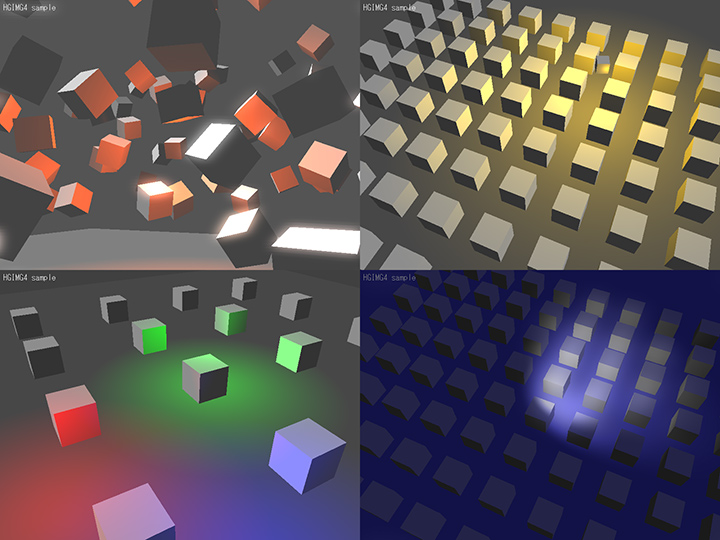
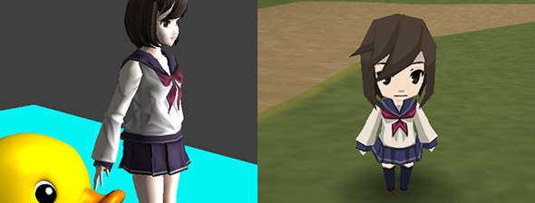

<!DOCTYPE HTML PUBLIC "-//W3C//DTD HTML 4.01 Transitional//EN">
<html lang="ja">
<head>
	<meta http-equiv="Content-Type" content="text/html; charset=UTF-8">
	<meta http-equiv="Content-Language" content="ja">
	<meta http-equiv="Content-Style-Type" content="text/css">
	<meta http-equiv="Content-Script-Type" content="text/javascript">
	<meta name="author" content="OpenHSP3 Project">
	<meta name="keywords" content="HSP,HSP3,HotSoupProcessor,HSP3Dish,android,ndk,google">
<meta name = "description" content = "Information about HSP3Dish HGIM G4 version">
	<link href="../main.css" rel="stylesheet" type="text/css" media="all">
<title> HGIMG4 Programming Guide </title>
</head>
<body>
	<div id="CONTAINER">
<!-Header->
	<p id="COPY">HSP : Hot Soup Processor ver3.6 / onion software 1997-2021(c)</p>
	
<h1> HGIM G4 Programming Guide </h1>

<!-Table of Contents->
	<ol>
<li> <a href="#ABOUT"> Introduction </a> </li>
<li> <a href="#ENVIROMENT"> Operating environment </a> </li>
<li> <a href="#USAGE"> How to use </a> </li>
<li> <a href="#RESOURCE"> About resource folders </a> </li>
<li> <a href="#DLLNOTICE"> Notes on DLLs </a> </li>
<li> <a href="#COMMANDS"> Instruction list (main) </a> </li>
<li> <a href="#COMMANDS_OBJ"> Command list (object operation) </a> </li>
<li> <a href="#COMMANDS_SUB"> Command list (auxiliary) </a> </li>
<li> <a href="#RUNTIME_NOTICE"> HGIMG4 Runtime Limits <span class = "new"> (New!) </Span> </a> </li>
<li> <a href="#UPDATE"> Difference from HSP3.5 version </a> </li>
<li> <a href="#DIFF_HGIMG3"> Differences from HGIMG3 </a> </li>
<li> <a href="#INITALIZE"> Initialization and drawing method </a> </li>
<li> <a href="#3DABSTRACT"> Overview of 3D operation </a> </li>
<li> <a href="#2DABSTRACT"> Overview of 2D operation </a> </li>
<li> <a href="#FONTMES"> Font display </a> </li>
<li> <a href="#MODE_OBJ"> Object mode settings </a> </li>
<li> <a href="#CAMERA"> Camera settings </a> </li>
<li> <a href="#LIGHT"> Light settings <span class = "new"> (New!) </Span> </a> </li>
<li> <a href="#COLLISION"> Collision group setting and collision detection </a> </li>
<li> <a href="#RENDERGRP"> Rendering group settings </a> </li>
<li> <a href="#PHYSICS"> Physical behavior settings <span class = "new"> (New!) </Span> </a> </li>
<li> <a href="#MATERIAL"> Material settings </a> </li>
<li> <a href="#3DMODEL"> Display of 3D model data </a> </li>
<li> <a href="#GPBMATERIAL"> About 3D model data material </a> </li>
<li> <a href="#GPBLIGHT"> Writing 3D model data </a> </li>
<li> <a href="#SCENE"> About drawing the scene </a> </li>
<li> <a href="#TRANSPARENT"> About drawing translucent objects </a> </li>
<li> <a href="#OBJECTPRM"> Object core parameters </a> </li>
<li> <a href="#OBJECTCLONE"> Object clone </a> </li>
<li> <a href="#VECTOR"> Real vector support instruction </a> </li>
<li> <a href="#ROTORDER"> About the rotation order of XYZ </a> </li>
<li> <a href="#FRAMERATE"> Get frame rate </a> </li>
<li> <a href="#ANIMATION"> Create animation clip </a> </li>
<li> <a href="#2DSHADER"> Original shader settings for 2D drawing </a> </li>
<li> <a href="#2DSHADER"> Original shader settings for 2D drawing </a> </li>
<li> <a href="#RENDERBUFFER"> Rendering buffer </a> </li>
<li> <a href="#EVENT"> Event list </a> </li>
<li> <a href="#POSTEFFECT"> Post effect <span class = "new"> (New!) </Span> </a> </li>
<li> <a href="#FREEMESH"> Create free shapes <span class = "new"> (New!) </Span> </a> </li>
<li> <a href="#MEMLIMIT"> Registration limit </a> </li>
<li> <a href="#ERRORLOG"> Error log </a> </li>
<li> <a href="#PACKFILE"> PACKFILE support </a> </li>
<li> <a href="#LICENCE"> Copyright and license </a> </li>
<li> <a href="#ANGLE_LICENCE"> Project Angle copyright and license </a> </li>
<li> <a href="#PRONAMA_LICENCE"> Copyright and license of professional student sample data </a> </li>
	</ol>


<h2 id = "ABOUT"> Introduction </h2>
	<p>
HGIMG4 provides various enhancements related to screen drawing when used with Hot Soup Processor ver3.6 or later.
	</p>
	<ul>
Features of HGIM G4 <br> <br>
	<li>
OpenGL / ES or DirectX 9 drawing, shader language support
	</li>
	<li>
Physics engine (Bullet) support integrated with scene management
	</li>
	<li>
FBX format model file reading, animation support
	</li>
	<li>
Supports materials and lighting with custom shaders
	</li>
	<li>
Font data (TTF) rendering support
	</li>
	<li>
Off-screen rendering and various post-effect support
	</li>
	<li>
Supports operation on Linux, iOS, Android, WebGL as well as Windows
	</li>
	<li>
License terms and open source similar to HSP and HSP3 Dish
	</li><br>
	</ul>
	<p>
	
	</p>


<h2 id = "ENVIROMENT"> Operating environment </h2>

	<p>
For HGIMG4, you can choose between OpenGL version and DirectX9 (angle) version.
The OpenGL version runs on Windows 7 or later, with OpenGL version 3.1 or higher installed.
The DirectX9 (angle) version runs on Windows 7 or later, with the latest version of DirectX9 runtime installed.
The DirectX9 (angle) version requires the following DLL to execute.
(This DLL comes with the HSP installation folder.
If you distribute a user-created application, distribute this DLL as well.
is needed)
	</p>
	<ul><ul><ul>
d3dcompiler_47.dll Additional DLL <br>
libEGL.dll Additional DLL <br>
libGLESv2.dll Additional DLL <br>
	</ul></ul></ul>
	<p>
These DLLs are not required if you are using the OpenGL version. <br>
HGIMG4 consists of the following files.
	</p>
	<ul><ul><ul>
hsp3gp.exe (Runtime for OpenGL execution) <br>
hsp3gpdx.exe (Runtime for DirectX execution) <br>
<br>
docs / hgimg4.txt (this file) <br>
common folder (HGIMG4 header file) <br>
hsphelp folder (HGIMG4 help file) <br>
runtime folder (HGIMG4 custom runtime) <br>
sample folder (HGIMG4 sample script & data) <br>
	</ul></ul></ul>
	<p>
HGIMG4 is positioned as a high-level runtime of HSP3Dish.
The functions of HSP3Dish are included, and it has a high-performance drawing function.
It is also possible to run normal HSP3Dish scripts.
As a multi-platform, it supports the following environments.
	</p>
	<ul><ul><ul>
Windows 7 or later (OpenGL version), XP or later (DirectX 9 version) <br>
Android 5.0 or later <br>
iOS 10 or later <br>
		Raspberry Pi (raspbian)<br>
Linux environment that supports SDL / OpenGL <br>
Various web browsers that support WebGL / html5 <br>
	</ul></ul></ul>
	<p>
In Android and iOS environments, with the same C ++ code conversion function as HSP3Dish
It can generate native code and register as a store app.
	</p>


<h2 id = "USAGE"> How to use </h2>

	<p>
When creating a script using HGIMG4, at the beginning of the script
	</p><pre>
	#include "hgimg4.as"
	</pre><p>
Please add the line. <br>
With the above, the function of HSP has been extended, and the instructions described in this reference are described.
You will be able to use it.
<br>
When using the HGIMG4 DirectX 9 version runtime
	</p><pre>
	#include "hgimg4dx.as"
	</pre><p>
Please write at the beginning of the script.
	</p><pre>
	#include "hgimg4.as"
	</pre><p>
If you write, the OpenGL version of the runtime will be used.
There is no difference in the features available in either runtime.
<br>
First of all, try running the included sample script.
You should be able to see a simple usage example of the enhanced functionality.
The sample script is sample / hgimg4 under the HSP installation folder.
It is prepared in.
	</p>


<h2 id = "RESOURCE"> About the resource folder </h2>

	<p>
HGIMG4 loads the necessary resources from the "res" folder in the same folder as the script when using 3D drawing.
The resource files are contained in the "sample / hgimg4 / res" folder.
The following files are required for startup, so be sure to include them when creating the executable file.
	</p><pre>
res / shaders folder (including files inside)
	</pre>
	<p>
If you only want to draw in 2D, you don't need the shader files in the res / shaders folder.
	<p>


<h2 id = "DLLNOTICE"> Notes on DLL </h2>

	<p>
HGIMG4 is not an extension plugin with an external DLL file.
It is provided as a runtime file that contains the functions of HSP3 DISH.
Be sure to use a version of the compiler that supports the HGIMG4 runtime.
Please use (hspcmp.dll) or a script editor. <br>
In addition, HSP3 is a code generator (hspcmp.dll) that supports the execution runtime.
Please use. (HSP3.6 or higher recommended) <br>
<br>
When creating an executable file for the DirectX 9 version runtime, "d3dcompiler_47.dll"
3 files "libEGL.dll" and "libGLESv2.dll" are in the same folder as the executable file
Please note that you will need it.
	</p>


<h2 id = "COMMANDS"> Command list (main) </h2>

	<pre>
setcls mode, color, tex screen erase settings
gpviewport x, y, sx, sy viewport settings
setborder sx, sy, sz, option Object scope setting
gpgetlog var Get HGIMG4 error log

gpreset option Draw scene
gpresetlight p1, p2, p3 Initialize the current light
gpuselight objid Registering a light object
gpusecamera objid Switching camera objects
gpusescene sceneid Scene switching

gpobjpool start, num Object ID generation settings
Discard delobj objid object
gpsetprm objid, prmid, value Object core parameter settings
Get core parameters for gpgetprm var, objid, prmid objects
setobjname objid, "name" Set the node name of the object
getobjname var, objid Get the node name of the object
setobjmode id, mode, sw Object mode settings
setcoli id, mygroup, enegroup Object collision settings
collision judgment of getcoli val, id, distance object
findobj exmode, group object search
nextobj val Search for the next object

gpcolormat var, color, opt Color material generation
gptexmat var, "file", opt Texture material generation
gpusermat var, "vsh", "fsh", "defs", color, opt Custom material generation
gpmatprm objid, "name", x, y, z Material parameter settings
gpmatprm objid, "name", value Material parameter setting (2)
gpmatprm objid, "name", x, y, z, w Material parameter settings (3)
gpmatstate objid, "name", "value" Material state setting

Generate gpbox var, size, color, matobj box node
gpfloor var, sizex, sizey, color, matobj Generate floor node
Generate gpplate var, sizex, sizey, color, matobj board nodes
gpload var, "file", "name" Generate 3D model node
gpspr var, bufid, celid, gmode 2D sprite node generation
gpnull var Generate null node

gplight id, opt, range, inner, outer Set light node
gpcamera id, fov, view, near, far set camera node

Duplicate gpclone var, objid node
setobjmode objid, value, mode Object mode settings
setalpha objid, value Object transparency (α value) setting
gplookat objid, x, y, z Rotate the node towards the specified coordinates

Set standard physical characteristics for gppbind objid, mass, friction, option nodes
gppset objid, prmid, x, y, z Set physical parameters for nodes
gppapply Apply physical force to objid, action, x, y, z nodes

celputm vxpos, vypos, vcelid, bufid, count Draw cells together
gpdraw option Draw all objects in the scene

gpaddanim objid, "name", start, end, option Added animation clips
gpact objid, "name", option Play / stop animation clip
gpgetanim var, objid, index, prmid Get animation clip settings
gpsetanim objid, index, prmid, value Updated animation clip settings
	</pre>


<h2 id = "COMMANDS_OBJ"> Command list (object operation) </h2>

	<pre>
getpos id, x, y, z Get node coordinates
setpos id, x, y, z Set node coordinates
addpos id, x, y, z Add node coordinates
getposi id, x, y, z Get node coordinates (integer value)

getquat id, x, y, z Get node rotation (quaternion)
getang id, x, y, z Get node rotation
getangr id, x, y, z Get node rotation (integer value)
setang id, x, y, z Set node rotation
setangr id, x, y, z Set node rotation (integer value)
addang id, x, y, z Add node rotation
addangr id, x, y, z Add node rotation (integer value)

getscale id, x, y, z Get node magnification
setscale id, x, y, z Set node magnification
addscale id, x, y, z Add node magnification
getscalei id, x, y, z Get node magnification (integer value)

getdir id, x, y, z Get node movement amount
setdir id, x, y, z Set node movement amount
adddir id, x, y, z Add node movement amount
getdiri id, x, y, z Get node movement amount (integer value)

getwork id, x, y, z Get nodework values
setwork id, x, y, z Set nodework values
addwork id, x, y, z Add nodework values
getworki id, x, y, z Get nodework value (integer value)

getwork2 id, x, y, z Get nodework value 2
setwork2 id, x, y, z Set nodework value 2
addwork2 id, x, y, z Add nodework value 2
getwork2i id, x, y, z Get nodework value 2 (integer value)

getcolor id, x, y, z Get node RGB color
setcolor id, x, y, z Set node RGB color
addcolor id, x, y, z Add node RGB color
getcolori id, x, y, z Get node RGB color (integer value)
	</pre>


<h2 id = "COMMANDS_SUB"> Command list (auxiliary) </h2>

	<pre>
selpos id Set moving coordinates to MOC information
selang id Set rotation angle to MOC information
selscale id Set scale to MOC information
seldir id Set movement amount to MOC information

objsetf3 x, y, z Set the selected MOC information
objaddf3 x, y, z Add the selected MOC information

objgetfv fv Get the selected MOC information
objsetfv fv Set the selected MOC information
objaddfv fv Add the selected MOC information

fvset fv, x, y, z vector setting
fvseti fv, x, y, z Vector setting from integer values
fvadd fv, x, y, z vector addition
fvsub fv, x, y, z vector subtraction
fvmul fv, x, y, z vector multiplication
fvdiv fv, x, y, z vector division
fvdir fv, x, y, z vector rotation
fvmin fv, x, y, z vector maximum value
fvmax fv, x, y, z vector minimum value
fvouter fv, x, y, z vector cross product
fvinner fv, x, y, z vector dot product
fvface Get the angle from the fv, x, y, z coordinates
fvunit fv vector normalization
fsin fval, rot Ask for sign
fcos fval, rot Ask for cosine
fsqr fval, prm Find the square root
froti fval, prm Convert integer angle to decimal value

fv2str fv Convert vector to string
str2fv fv, "x, y, z" Convert string to vector
	</pre>


<h2 id = "RUNTIME_NOTICE"> HGIMG4 runtime limits </h2>

	<p>
HGIMG4 is implemented as an extension of the HSP3Dish runtime.
It supports all the instructions that HSP3Dish has and has some enhancements.
However, there are also restrictions due to HSP3Dish (ActiveX objects and various placement objects cannot be used).
It happens as well. The basic grammar and program control are the same as HSP3. <br>
For more information on HSP3Dish, refer to <a href="hsp3dish_prog.htm"> HSP3Dish Programming Manual / Basic Specification Guide (hsp3dish_prog.htm) </a>. <br>
Also, there may be some restrictions on each platform that may not support the feature.
	</p>
		<table class="keywordlist" border="1">
<tr> <th> Platform </th> <th> Offscreen <br> (Rendering buffer) </th> <th> Input instruction support </th> </tr>
<tr> <td> Windows </td> <td> „Äá </td> <td> „Äá </td> </tr>
<tr> <td> Linux / Raspberry Pi </td> <td> „Äá </td> <td> „Äá </td> </tr>
		<tr><td>html5(Emscripten)</td><td>Å~</td><td>Å~</td></tr>
<tr> <td> android </td> <td> „Äá </td> <td> √ó </td> </tr>
		<tr><td>iOS</td><td>Å~</td><td>Å~</td></tr>
		</table>
	<p>
Please note that these restrictions may be resolved in future versions, but they are current specifications.
	</p>


<h2 id = "UPDATE"> Difference from HSP3.5 version </h2>

	<p>
Please refer to <a href="update36.htm#HGIMG4"> "HSP3.6 New Feature Highlights" </a> for the items added and changed in HSP3.6.
	</p>


<h2 id = "DIFF_HGIMG3"> Difference from HGIMG3 </h2>

	<p>
In HGIMG4, the source code is basically incompatible with HGIMG3.
However, if you are a user who has touched HGIMG3, it is inherited in the command system and system.
Since there are many points, it will be relatively easy to migrate.
	</p>
	<ul>
The main differences from HGIM G3 are as follows. <br> <br>
	<li>
In HGIMG3 I generated a model and assigned it to an object, but in HGIMG4
Objects (node objects) are directly created and placed.
	</li><li>
Information such as light reflection, texture, color, and translucency settings are used as material objects.
It will be generated and assigned to the object.
	</li><li>
The translucent material settings specified by the setefx instruction in HGIMG3 are not available.
	</li><li>
HG IMG4 uses the right-handed coordinate system by OpenGL. The positive direction of Y axis and Z axis is different from HGIM G3
	</li><li>
HGIMG4 internally holds object rotation information in quaternion format.
It is possible to give X, Y, Z rotation angles like HGIMG3, but the rotation posture will be different from HGIMG3.
There is a possibility.
	</li><li>
When arranging the same model more than once, it is recommended to use a clone (gpclone instruction).
	</li></ul>


<h2 id = "INITALIZE"> Initialization and drawing method </h2>

	<p>
Follow the procedure below for initialization.
	</p>
	<pre>
gpreset; initialization of hgimg
	</pre>
	<p>
The gpreset instruction is an instruction that initializes the entire system.
Initialization can be done at any time and as many times as you like.

After initialization, you can display the registered objects at any time.
It will be in a state.
In HGIMG4, drawing is done in the following loop.
	</p>
	<pre>
	;------------------------------------------------------------------
	*main
; Drawing main
		;
redraw 0; Start drawing (clear screen)

		;	
; Perform various drawing
		;	

redraw 1; End of drawing
await 1000/60; wait for time (60 frames / sec)
		goto *main
	;------------------------------------------------------------------
	</pre>
	<p>
For the source related to screen rewriting, use redraw 0 to notify the start of drawing,
Make sure to use redraw 1 to notify the end of drawing.
Unlike normal HSP3, by specifying "redraw 0", the screen will be displayed.
It will be cleared once. <br>
<br>
After starting drawing, you can freely write drawing commands such as box and mes.
After that, wait for a time (wait) with the await instruction. For "await 10"
Allow at least 10ms of waiting time. <br>
<br>
These rules are similar to HSP3Dish.
The drawing commands and specifications that can be used for 2D drawing are basically the same as HSP3Dish.
For details on the supported instructions, refer to <a href="hsp3dish_prog.htm"> HSP3Dish Programming Manual / Basic Specification Guide (hsp3dish_prog.htm) </a>.
	</p>


<h2 id = "3DABSTRACT"> Overview of 3D operation </h2>

	<p>
HGIMG4 provides a simple and flexible 3D drawing system.
An important building block is a "node object".

The "node object" is the operation target of HGIMG4.
Also known as a "node" or "object".
A "node object" contains all the elements that make up the 3D world.
Each has its own number (ID).
<br>
The node object has the following information:
	</p>
<pre>
Identification number (ID)
Node name
X, Y, Z coordinates (Pos)
X, Y, Z rotation (Ang)
X, Y, Z Magnification (Scale)
X, Y, Z movement amount (Dir)
R, G, B color
Work value (X, Y, Z, W) (Work, Work2)
Material Properties (MatID)
Physical characteristics (Physics)
Camera (viewpoint) setting (Camera)
Light (light source) setting (Light)
Emitter (Particle Source) Settings (Emitter)
</pre>
	<p>
"Scene" refers to the entire world, including multiple "node objects".
In HGIMG4, the "node object" registered in the "scene" is rendered (drawn).
It becomes a target. <br>
The general program flow is as follows.
	</p>
<pre>
Reset the entire scene with the gpreset command
‚Üì\r\nRegister the required node object in the scene
‚Üì\r\nSet node object information properly
‚Üì\r\nDraw the scene with the gpdraw command
The following are provided as instructions for adding a node object to the scene.
Generate gpbox var, size, color, matobj box node
gpfloor var, sizex, sizey, color, matobj Generate floor node
</pre>
	<p>
Generate gpplate var, sizex, sizey, color, matobj board nodes
	</p>
	<pre>
gpload var, "file", "name" Generate gpb model node
gpnull var Generate null node
Duplicate gpclone var, objid node
For details of each instruction, refer to the instruction help (F1 key).
"}

	</pre>
	<p>

The node object ID added to the scene is assigned to the variable specified at the time of creation.
After that, various information can be manipulated via the node object ID.
<br><br>
The generated object is usually placed at (0,0,0) coordinates.
The 3D coordinates use the right-handed coordinate system. The larger the Z coordinate value, the closer to you
The larger the Y coordinate, the more it is placed toward the ceiling.
<br><br>
The basic instructions for setting the coordinates, angles, and scale of an object are:
	</p>
<pre>
setpos id, x, y, z Set X, Y, Z coordinates (Pos)
setang id, x, y, z Set X, Y, Z rotation (Ang)
setangr id, x, y, z Set X, Y, Z rotation (Ang) (integer value)
setscale id, x, y, z X, Y, Z Set scale
</pre>
	<p>
Specified by the node object ID and the x, y, z parameters (real numbers are available).
	</p>
	<pre>
Example:
		setpos 3, 5, 1.2, 0.5
	</pre>
	<p>
The above example sets the object with node object ID 3 to the coordinate (5.0, 1.2, 0.5) position.
The setang command rotates by specifying the X, Y, and Z angles that the object is facing.
(The unit of angle is radian (π * 2 in one lap)) <br>
There is also a setangr command that allows you to set the angle as an integer for speedup.
In this case, specify 256 in units of one round (360 degrees).
(0 is 0 degrees, 64 is 90 degrees, 128 is 180 degrees ...) <br>
The value also provides instructions to set the following information:
	</p>
<pre>
setdir id, x, y, z X, Y, Z Set the movement amount (Dir)
setcolor id, x, y, z R, G, B Set color
setwork id, x, y, z Set work value (X, Y, Z)
setwork2 id, x, y, z Set work 2 values (X, Y, Z)
</pre>
	<p>
The X, Y, Z movement amount (Dir) is referenced when the object's automatic movement mode (OBJ_MOVE) is selected.
It will be the amount of movement. R, G, B color (Color) sets color information for some objects such as lights
It will be used when.
Work value and work value 2 are prepared for numerical storage that can be freely used by the user.
<br><br>
There are add ~ type instructions that not only set the value directly but also add.

	</p>
<pre>
addpos id, x, y, z Add X, Y, Z coordinates (Pos)
addang id, x, y, z X, Y, Z Add rotation (Ang)
addangr id, x, y, z X, Y, Z Add rotation (Ang) (integer value)
addscale id, x, y, z X, Y, Z Add scale
</pre>
	<p>
These add the specified value to the originally set value.
The same types of add ~ type instructions are available as the set ~ type instructions.
<br><br>
In addition, get ~ type instructions are prepared to get the set information.
	</p>
<pre>
getpos id, x, y, z Get X, Y, Z coordinates (Pos)
getscale id, x, y, z Get X, Y, Z scale
getdir id, x, y, z X, Y, Z Get the amount of movement (Dir)
getwork id, x, y, z Get work value (X, Y, Z)
getwork2 id, x, y, z Get work2 value (X, Y, Z)
</pre>
	<p>
In these instructions, specify the variable name of the read destination in x, y, z.
	</p>
	<pre>
Example:
Read the XYZ coordinates of the camera into variables a, b, c
			getpos GPOBJ_CAMERA,a,b,c
	</pre>
	<p>
In the above example, the variable a has the X coordinate, the variable b has the Y coordinate, and the variable c has the Z coordinate.
Each is assigned as a real number type. <br>
To get the parameter as an integer value, use the following instruction.
	</p>
<pre>
getposi id, x, y, z Get X, Y, Z coordinates (Pos) as an integer value
getscalei id, x, y, z X, Y, Z Get scale as an integer value
getdiri id, x, y, z X, Y, Z Get the movement amount (Dir) as an integer value
getworki id, x, y, z Get work value (X, Y, Z) as an integer
getwork2i id, x, y, z Get work 2 value (X, Y, Z) as an integer value
</pre>
	<p>
Instructions with an "i" added at the end are assigned to variables as integer values.
Used when handling coordinates only as integers or when you want to speed up
can do.
	</p>
<pre>
getquat id, x, y, z Get node rotation (quaternion)
getang id, x, y, z Get node rotation
getangr id, x, y, z Get node rotation (integer value)
</pre>
	<p>
These instructions get rotation information.
Specify the variable name of the read destination in x, y, z. <br>
Care must be taken when acquiring rotation information. Internal in 3D node object
It holds the rotation information in quaternion format, and the perfect X, Y, Z rotation angle.
It's difficult to ask. Therefore, it is different from the X, Y, Z angles specified by the setang instruction.
The value may be retrieved. To reproduce a close posture
Note that it is a converted value.
	</p>


<h2 id = "2DABSTRACT"> Overview of 2D drawing </h2>

	<p>
HGIMG4 has various functions related to 2D drawing.
2D drawing methods can be broadly divided into two categories.
	</p>
	<ul><ul><ul>
	<li>
Direct drawing
</li><br><p>
Standard supported by HSP3Dish such as mes instruction and boxf instruction
Drawing commands (celput, gcopy, gzoom, etc.) are available.
In the drawing loop (drawing unit of 1 frame) from redraw 0 to redraw 1
Drawing is executed by writing.
	<li>
Drawing with sprite objects
</li><br><p>
Sprite object in the scene as one of the objects
You can register and manage it.
Sprite objects are similar to 3D node objects
An object ID is assigned, and coordinates, angles, magnification, etc. can be set.
	</p></ul></ul></ul>
	<p>
Choose the method that is easy for you to use, depending on your needs.
For example, if you want to display a large 2D image in the background, draw directly with the gcopy command, etc.
Things that appear in large numbers such as enemy characters are sprite objects, etc.
You can sort the usage.
<br><br>
If you want to create a sprite object, use the gpspr instruction.
	</p>
	<pre>
Generate gpspr var, bufid, celid, gmode 2D sprites
	</pre>
	<p>
Specify the buffer ID of the image read by bufid, the cell ID by celid, and the compositing mode by gmode.
Create a sprite object.
The generated object ID is assigned to the variable specified by var.
<br><br>
The generated sprite object is usually placed at (0,0) coordinates.
2D coordinates are managed by screen coordinates (values that correspond one-to-one with the dots on the screen).
The upper left corner of the screen is the coordinates (0,0).
<br><br>
The registered sprite object is at the timing when the scene is drawn by the gpdraw command.
It will be drawn automatically. In that case, the set X, Y magnification and Z rotation angle are applied.
Sprite objects have collision detection (collision) that the object has, control by mode, etc.
You can take advantage of various functions.
	</p>


<h2 id = "FONTMES"> Font display </h2>

	<p>
Any character string can be displayed by the mes command.
The setting specified by the font command is applied to the font to be displayed.
	</p>
	<pre>
		font msgothic,30,font_antialias
mes "Hello"
	</pre>
	<p>
The default setting is a 16-point size for standard fonts.
Please note that a separate font file may be required depending on the platform.
	</p>
		<table class="keywordlist" border="1">
<tr> <th> Platform </th> <th> Character code </th> <th> Font file </th> </tr>
<tr> <td> Windows </td> <td> SJIS </td> <td> Not required </td> </tr>
<tr> <td> Linux / RaspberryPi </td> <td> UTF-8 </td> <td> ipaexg.ttf file required </td> </tr>
<tr> <td> html5 (Emscripten) </td> <td> UTF-8 </td> <td> ipaexg.ttf file required </td> </tr>
<tr> <td> android </td> <td> UTF-8 </td> <td> unnecessary </td> </tr>
<tr> <td> iOS </td> <td> UTF-8 </td> <td> unnecessary </td> </tr>
		</table>
	<p>
The font display is similar to HSP3Dish in that the font character string is drawn on the texture and cached.
This method has the advantage of using free fonts and characters, but it is CPU- and memory-intensive when displaying different content over a wide area.
Displaying values and contents that change for each frame will increase the load for each frame.
It also increases the load when the font size is large or when a large amount of text is displayed on the screen. <br>
If you do not need to draw in font, you can switch the display in lightweight drawing format up to HSP3.5 by system request. (However, the characters that can be displayed are limited to English characters.)
		</p><pre>
	setreq SYSREQ_USEGPBFONT,1
		</pre><p>
As shown above, you can switch to HSP3.5 compatible font display by setting SYSREQ_USEGPBFONT to 1 in the system request. (In this case, you need to prepare a "res / font.gpb" file as font data.) <br>
Font drawing can be switched at any time by system request.
	</p>


<h2 id = "MODE_OBJ"> Object mode setting </h2>

	<p>
Display objects (node objects, sprite objects) can be turned ON / OFF
Mode settings are available.
	</p>
	<pre>
setobjmode id, mode, sw Object mode settings

ObjID: Object ID
mode: mode value
sw: Setting switch
	</pre>
	<p>
sw works as follows.
	</p>
	<pre>
sw = 0: Add the specified mode value
sw = 1: Delete the specified mode value
sw = 2: Set only the specified mode value
	</pre>
	<p>
Select the mode flag value from the following.
	</p>
	<pre>
Label | Content
		--------------------------------------------------------------
OBJ_HIDE Hide (remove from screen)
OBJ_CLIP Enable 3D clipping
OBJ_XFRONT Front attribute (always faces the screen)
OBJ_WIRE Draw with wireframe
OBJ_MOVE Performs automatic movement (see XYZ movement amount)
OBJ_FLIP Invert in border area
OBJ_BORDER Enable border area
OBJ_2D 2D sprite
OBJ_TIMER Enable timer
OBJ_LATE Draws after (for translucent objects)
	</pre>
	<p>
To select multiple items at the same time, like "OBJ_LATE | OBJ_MOVE"
You can specify them by separating them with "|". If nothing is specified, set it to 0
You can omit it.
	</p>
	<pre>
Example:
		setobjmode id, OBJ_MOVE, 0
	</pre>
	<p>
In the above example, OBJ_MOVE (automatic move) setting is set for the object specified by the variable id.
add. This causes this object to set the XYZ movement amount (set by the setdir instruction).
It will move automatically.
	</p>


<h2 id = "CAMERA"> Camera settings </h2>

	<p>
The camera (viewpoint) has the coordinates of the base point that draws the 3D scene.
The camera is treated as one of the node objects and has a unique object ID.

When the scene is reset, the default camera will be in place.
The default camera can be accessed using the GPOBJ_CAMERA macro.
	</p>
	<pre>
Example:
setpos GPOBJ_CAMERA, 0,1,5; Set camera position
	</pre>
	<p>
The above example sets the default camera to coordinates (0,1,5).
The camera becomes the viewpoint coordinates for viewing the 3D scene, and the viewpoint direction changes due to the rotation of the node object.
Will be decided. You can set the angle for viewing the specified coordinates from the camera.
The gplookat instruction is also available.
	</p>
	<pre>
Example:
gplookat GPOBJ_CAMERA, 0,1,0; Set camera gaze point
	</pre>
	<p>
In the above example, the angle to see the coordinates (0,1,0) is applied to the camera.
<br><br>
In addition to the default camera, it is possible to set multiple cameras in the scene and switch between them.
	</p>
	<pre>
Example:
gpnull id_camera; generate a null node
gpcamera id_camera, 45, 1.5, 0.5, 768; Set as camera
gpusecamera id_camera; Select the camera to use
setpos id_camera, 0,20,20; Set the camera position
	</pre>
	<p>
The cameras placed in the scene can be switched by the gpuse camera command.
By generating your own camera, you can create your own FOV (angle of view) and Z-axis range (Z clipping range).
Can be set.
	<br>
Also, by specifying 1 for the camera type value of the gpcamera command, it is possible to set the camera that performs parallel projection (Orthographic).

	</p>


<h2 id = "LIGHT"> Light settings </h2>

	<p>
Lights are lighting information that can be placed in a 3D scene.
The light is treated as one of the node objects and has a unique object ID.
<br><br>
When the scene is reset, the default directional lights are placed.
The default lights can be accessed using the GPOBJ_LIGHT macro.
	</p>
	<pre>
Example:
setcolor GPOBJ_LIGHT, 1,1,1; Set the light color
setdir GPOBJ_LIGHT, 0.5,0.5,0.5; Set ambient color
	</pre>
	<p>
In the above example, the default light color is set to (1,1,1).
As the light color, the color set in the node by the setcolor command is used as it is. <br>
The color setting can be specified for each RGB with a real value from 0 to 1. 1 is the maximum brightness, so
Expressed at the RGB stage, it becomes (R = 255, G = 255, B = 255). <br>
For default lights, setdir allows you to set the ambient color.
In the above example, (R = 128, G = 128, B = 128) is the ambient color.
	<br>
With directional lights, changing the rotation angle of the light changes the direction in which the light is applied.
<br><br>
It is possible to set a light other than the default light.
The following lights are available on the HGIMG4. Up to 10 lights can be reflected on the 3D object for each type.
	</p>
		<table class="keywordlist" border="1">
<tr> <th> Type </th> <th> Function </th> <th> GPU load </th> <th> Referenced parameters </th> </tr>
<tr> <td> Directional light </td> <td> Light source with direction only </td> <td> Low </td> <td> Rotation (Ang) </td> </tr>
<tr> <td> Point light </td> <td> Light source with coordinates and range of influence </td> <td> Medium </td> <td> Coordinates (Pos), Range (Range) </td > </tr>
<tr> <td> Spotlight </td> <td> Coordinates and direction, light source with range of influence </td> <td> High </td> <td> Coordinates (Pos), Rotation (Ang), Range, Inner, Outer </td> </tr>
		</table>
	<p>
<br><br>
In order to set a new light, you need to create a light object.
This will be one of the objects that will be placed in 3D space.
A light object can be created by executing the gplight instruction on the null node generated by the gpnull instruction.
It is possible to create not only null nodes but also 3D models placed in 3D space as light objects. In this case, it is a 3D node that functions as a light.
	</p>
	<pre>
Example:
gpnull id_alight; generate a null node
gplight id_alight, GPOBJ_LGTOPT_NORMAL; Register as a light
gpuselight id_alight; Set to default light
	</pre>
	<p>
The gplight instruction initializes a light object with parameters, specifying the type of light.
	</p>
	<pre>
gplight id, opt, range, inner, outer Set light node

id (0): ID of the object
opt (0): Light generation option
range (1): Range of influence parameter
inner (0.5): Inner attenuation parameter
outer (1): Outer damping parameter
	</pre>
	<p>
The type can be determined by the light generation option.
	</p>
	<pre>
opt value | content
		--------------------------------------------------------------
GPOBJ_LGTOPT_NORMAL Parallel light source (directional light)
GPOBJ_LGTOPT_POINT Point light source (point light)
GPOBJ_LGTOPT_SPOT Spotlight
	</pre>
	<p>
This will create an object with the characteristics of a light.
The gplight instruction only sets the object to function as a light.
The set light must be registered as the current light by the gpuselight instruction. <br>
The current light is the light information that is set when creating a 3D object or material.
As long as you use only the default light source, you will not be aware of the current light,
When setting multiple light sources newly, it is necessary to set the current light appropriately.
	</p>
	<pre>
Initialize the current light with the gpresetlight instruction
‚Üì\r\nRegister the required light with the gpuselight instruction
‚Üì\r\nGenerate 3D objects and materials (reflects current light information)
The gpresetlight instruction is an instruction to initialize the current light.
By setting the current light, you can determine the details of the light received by the models and materials generated after that. <br>
	</pre>
	<p>
When the scene is initialized, only one directional light can be set. When using multiple lights, point lights, spot lights, etc., it is necessary to determine the number of current lights in advance by using the gpresetlight command.
p1 = 1 to 9 (1): Number of directional lights
p2 = 0 to 9 (0): Number of point lights
	</p>
	<pre>
		gpresetlight p1,p2,p3

p3 = 0-9 (0): Number of spotlights
"}

	</pre>
	<p>
The p1, p2, and p3 parameters specify the maximum number of lights used by each light type. You must use at least one directional light.
Specify other point lights and spot lights as needed. Avoid specifying unnecessary lights as much as possible, as this will increase the computational load on the GPU. <br>
After the current light is initialized, it can be registered with the gpuselight instruction.
	</p>
	<pre>
		gpuselight id,index

id (0): ID of the light object to be registered
index = 0 to 9 (0): Index of the light object to be registered
	</pre>
	<p>
If you specify the ID of the light object in id, it will be registered in the current write. <br>
The index value is used to register multiple lights with the current light. It is possible to set up to 10 lights for each type in the form of 0 for the first light, 1 for the second light, and so on. <br>
By registering with the current light, the model materials generated after that will be affected by the current light.
	<br>
There is only one ambient color in the scene, and it refers to the parameters of the light indexed to 0 as a directional light.
	<br><br>
If you want to change the light settings that are already set on the object, use the setobjlight command.
	</p>
	<pre>
		setobjlight id

id: object ID
	</pre>
	<p>
This will overwrite the current light setting even if the object specified by id has already been set to light.
However, please note that the current light settings (number of directional lights, point lights, spotlights) at the time the 3D model is generated will not be changed. (Be sure to set the number of lights included in the current light to be the same.)
	</p>
	<p>
	
	</p>
	<p>
The sample / hgimg4 folder contains light_test1.hsp to light_test5.hsp as sample light settings, so please check the operation as well.
	</p>


<h2 id = "COLLISION"> Collision group setting and collision detection </h2>

	<p>
By setting a collision group for each object
It makes it easier to identify the type and makes it possible to use functions such as collision detection.
	</p>
	<pre>
setcoli id, mygroup, enegroup Object collision settings

id: object ID
mygroup: Group value to which you belong
enegroup: Group value for which collisions are detected

Set collision information for the object.
The group value is
1,2,4,8,16,32,64,128,256,512,1024,2048,4096,8192,16384,32768…
Only one can be selected from. (Up to 32-bit value can be specified)
	</pre>
	<p>
Objects for which collision groups are set can be connected by the getcoli command.
You will be able to detect collisions within the specified range.
	</p>
	<pre>
Collision judgment of getcoli var, id, distance object

var: variable name to which the result is assigned
id: object ID
distance: Range to detect collision (real value)

Based on the collision information of the specified object,
Find out the ID of another object that the object is colliding with.
distance specifies the range (radius) of collision as a float value.
If a collision is detected, the variable will be assigned the object ID.
If no collisions are detected, -1 is substituted.
	</pre>
	<p>
Collision group settings and collision detection are 3D node objects, 2D sprite objects
Either can be used. However, 3D node objects and sprite objects are
Collisions are not detected because the coordinate systems are different. <br>
The getcoli command is a function to detect collisions by detecting whether the coordinates overlap in a spherical (or circular) range, and it can be checked quickly and easily, but it is based on an accurate 3D shape. The contact is not judged. <br>
However, if you have set the physical behavior of the 3D object, you can use that information to make an accurate contact judgment. For details, see the <a href="#PHYSICS"> Physical behavior settings </a> section.
	</p>


<h2 id = "RENDERGRP"> Rendering group settings </h2>

	<p>
By setting the rendering group, it is possible to group the camera lights referenced by each object. <br>
With the setobjrender command, you can give the object a setting to show / hide for each camera.
You can also set lighting groups to control the reflection of lights on a per-object basis.
		</p><pre>
	setobjrender id,rendergroup,lightgroup

id (0): Object ID
rendergroup (1): Rendering group value
lightgroup (1): Lighting group value
		</pre><p>
The render group value is valid if it is the same as the render group value of the camera or light.
Normally, group 1 is set for both objects and cameras. Display from a specific camera only
It can be used when you want to disable the display. <br>
Lighting group values enable / disable for specific lights.
If it is different from the lighting group value of the light, the light will be disabled. <br>
Each group value is from 1,2,4,8,16,32,64,128,256,512,1024,2048,4096,8192,16384,32768
Any combination of bits can be specified.
	</p>


<h2 id = "PHYSICS"> Physical behavior settings </h2>

	<p>
HGIMG4 integrates the physical behavior of the Bullet Physics Library into 3D node objects.
By setting the physical characteristics of the objects placed in the scene, it operates according to the laws of physics.
The targets of physical behavior are box nodes (generated by gpbox), floor nodes (generated by gpfloor), and board nodes (generated by gpplate).
And gpb model node (generated by gpload).
<br><br>
At the stage of creating the node object, no physical settings have been made.
Use the gppbind instruction to make physical settings.
	</p>
	<pre>
Set standard physical characteristics for gppbind objid, mass, friction, option nodes

			objid,mass,friction,option
objid (0): Object ID
mass (1): Weight
friction (0.5): friction coefficient
option (0): Configuration option
	</pre>
	<p>
First, use the gppbind instruction to make basic physical settings.
The mass parameter is the weight of the object. The friction parameter is the coefficient of friction. If you omit the value, the default value is used.
By setting the mass to 0, it is set as a static rigid body (collision, but does not move).
Otherwise, it will fall to the floor according to the laws of physics. <br> <br>
<b> * When setting the physical behavior, be sure to create the part that will be the floor (ground).
A fixed floor surface can be created by setting standard physical characteristics for the floor generated by the gpfloor instruction.
If the floor did not exist, the object would continue to fall forever. </b> <br> <br>
After that, the node object with physical settings will operate independently, and coordinate changes such as setpos will be invalid. <br> <br>
The option at the time of setting is added by the option parameter. You can specify the following macros.
	</p>
	<pre>
opt value | content
	--------------------------------------------------------------
GPPBIND_NOSCALE Do not reflect node scale in collision
Reflect the node model as a GPPBIND_MESH collision
	</pre>
	<p>
When you make physical settings for a node object, information (collision) for making contact judgments is created. <br>
Box nodes, floor nodes, and board nodes treat their shapes as collisions. If GPPBIND_NOSCALE is specified for option, the original shape that does not reflect the scale will be a collision. <br>
By default, 3D model nodes create collisions with spheres that cover the entire model. However, if GPPBIND_MESH is specified for option, the model shape itself is treated as a collision. However, if the complex model shape is made into a collision, the load on the contact judgment will increase. <br>
Collisions are information that is independent of the shape of the model. Please note that the scale value of the node will not be reflected after the collision is created.
<br><br>
For more detailed physical settings, use the gppset instruction.
	</p>
	<pre>
gppset objid, prmid, x, y, z Set physical parameters for nodes
	</pre>
	<p>
You can specify the items to be set with the parameter prmid.
The values specified for X, Y, Z are applied to each item.
	</p>
	<pre>
Macro name Contents
	    ----------------------------------------------------------------------------
GPPSET_ENABLE X = Physical behavior ON / OFF (0 = Invalid)
GPPSET_FRICTION X = coefficient of friction, Y = elasticity setting
GPPSET_DAMPING X = linear repulsion (0-1.0), Y = angular repulsion (0-1.0)
GPPSET_KINEMATIC X = Kinematic setting ON / OFF (0 = invalid)
GPPSET_ANISOTROPIC_FRICTION X, Y, Z = anisotropic friction
GPPSET_GRAVITY X, Y, Z = Gravity
GPPSET_LINEAR_FACTOR X, Y, Z = Vector movement settings
GPPSET_ANGULAR_FACTOR X, Y, Z = Rotation settings along vector
GPPSET_ANGULAR_VELOCITY X, Y, Z = Rotating Velocity
GPPSET_LINEAR_VELOCITY X, Y, Z = Linear Velocity
	</pre>
	<p>
If you want to apply force to an object, use the gppapply instruction.
	</p>
	<pre>
gppapply Apply physical force to objid, action, x, y, z nodes
	</pre>
	<p>
The gppapply instruction applies the physical force of the vector specified by (x, y, z) to the node.
The types that can be set with the parameter action are as follows.
	</p>
	<pre>
Macro name Contents
	    ----------------------------------------------------------------------------
GPPAPPLY_FORCE Add the force to move
GPPAPPLY_IMPULSE Gives a momentary impact
GPPAPPLY_TORQUE Gives torque (twisting) force
GPPAPPLY_TORQUE_IMPULSE Torque + impact
	</pre>
	<p>
For objects with physical settings, you can use commands to make detailed contact judgments. <br>
The physical collision information of an object can be acquired by the gppcontact and gppinfo instructions.
This makes it possible to find out the ID of the object that comes into contact with the specified object, the coordinates of the collision, the strength of the collision, and so on.
	</p>
	<pre>
Create physical collision information for gppcontact var, objid objects
	</pre>
	<p>
The gppcontact instruction creates all the information when the 3D object specified by objid collides with another object. <br>
The 3D object specified by objid must be physically set by the gppbind instruction.
In addition, it is necessary to properly set the collision group of the object for which collision is detected by the setcoli instruction.
The number of collision information created is assigned as an integer value to the variable specified by var. (If an error occurs, a negative value will be assigned.) <br>
Multiple collision information may be created. This is because multiple objects can collide at the same time. If the variable is assigned 0, it indicates that there are no conflicting objects.
The actual collision information can be obtained by the gppinfo instruction. As collision information, you can obtain the object ID of the collision target, the coordinates of the collision, the strength of the collision, and so on. <br>
Collision information is created for each object ID and is retained until a new gppcontact instruction is executed.
The gppcontact instruction is an instruction to obtain the details of the collision that occurred in the process of physical behavior. If you just want to know a simple collision, you can use the getcoli instruction as an alternative.
Also, since it is based on the information that it collided when it moved by physical behavior (it was sunk into another object), it is collision information in a state where there is no movement (a state where it is just in contact) Please note that is not created. <br>
	</p>
	<pre>
gppinfo Get physical collision information for var, fv, objid, index objects
	</pre>
	<p>
Get the physical collision information of the created object by the gppinfo instruction. Be sure to execute the gppcontact instruction first. <br>
Assigns the physical collision information of the 3D object specified by objid to the variables specified by var and fv. The following contents are stored in the variable.
	</p>
	<pre>
Variables to be assigned
	--------------------------------------------------------------
var Collision object ID
        fv (0) Collision X coordinate
        fv (1) Collision Y coordinate
        fv (2) Collision Z coordinate
        fv (3) Collision strength
	</pre>
	<p>
If there is more than one collision information detected by the gppcontact instruction, it is identified by the index value starting from 0.
If there are three collision information, the index value can be 0 to 2.
If the process ends normally, 0 is assigned to the system variable stat. If an error occurs, the system variable stat is assigned a negative value.
	</p>
	<p>
The gppraytest instruction can examine objects that touch any vector (two points in space) instead of touching them.
	</p>
	<pre>
gppraytest Get physical collision information on var, objid, distance vector
	</pre>
	<p>
Investigate the object ID of the first 3D object that collides within the distance specified by distance from the direction the object is facing, starting from the object with the 3D node specified by objid. <br>
The object specified by objid does not need to be physically configured. There is no problem even if it is a camera or a null node. <br>
The result is assigned to the variable specified by var. If any error occurs, a negative value will be assigned.
If there is an object that collides with the line segment, that object ID is assigned. If there are no conflicting objects, 0 is assigned.
If there is a conflict, more detailed information will be stored in the node work values (work, work2) of the object specified by objid.
The nodework value can be obtained by the getwork and getwork2 instructions. The contents set for each are as follows.
	</p>
	<pre>
Nodework value What is set
	--------------------------------------------------------------
work X, Y, Z coordinates where the collision occurred
work2 Normal vector of collision surface X, Y, Z value
	</pre>
	<p>
With the gppraytest instruction, all physically configured objects are subject to collision. Collision group settings are not taken into account.
	</p>
	<p>
	
	</p>
	<p>
The sample / hgimg4 folder contains physics_1.hsp and physics_2.hsp as samples of contact judgment by physical settings, so please check the operation as well.
	</p>

<h2 id = "MATERIAL"> Material settings </h2>

	<p>
Material is detailed setting information about drawing (rendering).
It handles a wide range of information, from color information to texture images and shader settings.
Standard material is automatically applied in normal node object generation.
	</p>
	<pre>
Example:
gpbox id_model, 1, 0xffffff; Added white box node
	</pre>
	<p>
In the above example, a white colored cube will be generated.
Users can create their own materials to set different textures.
The instructions for creating a material are:
	</p>
	<pre>
gpcolormat var, color, opt Color material generation
gptexmat var, "file", opt Texture material generation
gpusermat var, "vsh", "fsh", "defs", color, opt Custom material generation
	</pre>
	<p>
In either case, when the material is generated, it will have an integer value called the material ID.
Assigned to a variable. After that, various settings can be changed via the material ID.
It will be possible.
<br><br>
The gpcolormat instruction produces a solid color material.
	</p>
	<pre>
		gpcolormat var,color,opt

var: Variable name to which the generated material ID is assigned
color (0): Material color (24bit RGB value)
opt (0): Material option value

Example:
		gpcolormat mat_id,0xff00ff,GPOBJ_MATOPT_NOLIGHT
		gpbox id_model, 1, , mat_id
	</pre>
	<p>
In the above example, we have a non-lighting material with RGB color 0xff00ff (purple).
A cube node object is created.
<br><br>
By specifying a user-generated material ID when the object creates it
It is possible to have your own material.
You can change the settings by specifying the following as an option when generating the material.
These settings can also be set separately with the gpmatstate instruction.
	</p>
	<pre>
Macro name Contents
	    ----------------------------------------------------------------------------
GPOBJ_MATOPT_NOLIGHT Do not write
GPOBJ_MATOPT_NOMIPMAP Do not generate MIPMAP
GPOBJ_MATOPT_NOCULL Disable culling
GPOBJ_MATOPT_NOZTEST Disable Z test
GPOBJ_MATOPT_NOZWRITE Disables Z-buffer writing
GPOBJ_MATOPT_BLENDADD Set blend mode to add
GPOBJ_MATOPT_SPECULAR Apply specular when calculating light source
	</pre>
	<p>
The gptexmat instruction produces a material with a texture (image).
	</p>
	<pre>
		gptexmat var,"file",opt

var: Variable name to which the generated material ID is assigned
"file": Texture file name to be read
opt (0): Material option value

Example:
gptexmat id_texmat, "res / qbox.png"; Texture material creation
gpbox id_model, 1,, id_texmat; Add box node
	</pre>
	<p>
In the above example, we will generate a material with qbox.png in the res folder as a texture. <br>
For texture materials, you can specify the following options in addition to the material options of the gpcolormat instruction.
	</p>
	<pre>
Macro name Contents
	    ----------------------------------------------------------------------------
GPOBJ_MATOPT_MIRROR Display as inverted image
GPOBJ_MATOPT_CUBEMAP Set as a cubemap
GPOBJ_MATOPT_NODISCARD Disable pixel discard by alpha channel
	</pre>
	<p>
The gpusermat instruction creates a custom material, using any shader
You will be able to control everything in the drawing.
This is an extension for advanced users who are familiar with shaders, so it is usually
No need to use.
	</p>
	<pre>
gpusermat var, "vsh", "fsh", "defs", color, opt Custom material generation

var: variable name to which the result is assigned
"vsh": Vertex shader filename
"fsh": Fragment shader filename
"defs": additional label definitions
color: RGB color code
opt: Material option specification
	</pre>
	<p>
If you generated a custom material, use the gpmatprm command to set it to the shader parameter.
You can set the value to pass.
	</p>
	<pre>
Example:
gpmatprm objid, "u_diffuseColor", 1,0,0.5; Material parameter settings
	</pre>
	<p>
In the above example, the parameter named u_diffuseColor has a vector value of (1.0, 0.0, 0.5).
Set. This allows you to pass different parameters to the shader for each material.
It will be possible.
<br><br>
The gpmatstate instruction changes the state setting for display via the material ID.
	</p>
	<pre>
gpmatstate objid, "name", "value" Material state setting
	</pre>
	<p>
Set the content specified by value for the item specified by name as a character string.
Please note that all items and settings are made with character strings.
The details of the setting items and contents are as follows.
	</p>
	<pre>
		name             value
	    --------------------------------------------------------------------
"blend" Enable / disable blend
(Specify true or false)
"blendSrc" Select blend source (see below)
"blendDst" Select a blend destination (see below)
"cullFace" Enable / disable hidden surface removal (culling)
(Specify true or false)
"cullFaceSide" Face designation for hidden surface removal (culling)
"depthTest" true or false
(Specify true or false)
"depthWrite" Enable / disable Z-buffer write
(Specify true or false)
"depthFunc" Select Z-value comparison method (see below)

(*) Character string that can be set with blendSrc and blendDst

"ZERO" immediate value (0)
"ONE" immediate value (1)
"SRC_COLOR" Writing source color
"ONE_MINUS_SRC_COLOR" Write source color (inverted value)
"DST_COLOR" Write destination color
"ONE_MINUS_DST_COLOR" Write destination color (inverted value)
"SRC_ALPHA" write source α
"ONE_MINUS_SRC_ALPHA" Write source α (inverted value)
"DST_ALPHA" write destination α
"ONE_MINUS_DST_ALPHA" Write destination α (inverted value)
"CONSTANT_ALPHA" α fixed value
"ONE_MINUS_CONSTANT_ALPHA" α fixed value (inverted value)
"SRC_ALPHA_SATURATE" Write source α inversion value

(*) Character string that can be set with cullFaceSide

BACK back side culling
FRONT surface culling
FRONT_AND_BACK Culling both sides

(*) Character string that can be set with depthFunc

NEVER always refuse
LESS Allowed only when the value is small
EQUAL Only the same value is allowed
LEQUAL Allowed only when the value is the same or smaller
GREATER Allowed only when the value is large
NOTEQUAL Only non-identical values are allowed
GEQUAL Allowed only when the value is the same or larger
ALWAYS always allow
	</pre>


<h2 id = "3DMODEL"> Display of 3D model data </h2>

	<p>
Filed 3D model data (.gpb file) by gpload instruction
It can be read and displayed.
	</p>
	<pre>
Example:
gpload id_model, "res / duck"; model loading
	</pre>
	<p>
In the above example, we will load the duck.gpb file in the res folder.
At that time, the duck.material file that contains the material information is referenced.
In addition, if textures are needed, the image files in the same folder will also be loaded.

The file (.gpb format) for loading with the gpload instruction is used as standard in gameplay3D.
The data format. HGIMG4 provides HGIMG4 tools for generating .gpb format. <br>
Select "Open HGIMG4 Tool" from the "Tools" menu of the HSP Script Editor, or
	</p>
	<pre>
		gpbconv.exe
	</pre>
	<p>
The tool will start by starting.
(Internally call the command line tool gameplay-encoder.exe)
		</p>
		<p>
		
		</p>
		<p>
The HGIMG4 tool can convert fbx format files to .gpb format.
In addition, it is possible to output and check the material information (.material) that is read together with the .gpb format.
<br><br>
The fbx format is the standard 3D format used by Autodesk 3D tools.
You can use the 3D tool "Unity" to convert and check the fbx format.
For more information, please see <a href="hgimg4_unity.html" target="_blank"> this page </a>.
	</p>
	<pre>
<a href="hgimg4_unity.html" target="_blank"> HGIMG4 Unity Cooperation Guide </a>
		<a href="hgimg4_unity.html" target="_blank">hgimg4_unity.html</a>
	</pre>
		</p>
		<p>
		
		</p>
		<p>
Currently, the tools that are checking the fbx output and gpb conversion are Blender, Maya, and Unity. <br>
Please use the latest version of gpbconv.exe and gameplay-encoder.exe included in the HSP full set.
If the converter and HSP runtime versions are different, they may not be displayed correctly.
	</p>


<h2 id = "GPBMATERIAL"> About 3D model data material </h2>

	<p>
The material information (.material file) that is loaded with the .gpb format contains detailed information about the material (texture) that the model has.
Since the .material file is a text file, you can view it with a normal text editor and edit the contents as needed.
	<br>
The .material file can be checked and edited from the HGIMG4 tool.
For HGIMG4 tools, select "Open HGIMG4 Tools" from the "Tools" menu of the HSP Script Editor, or
Please execute "gpbconv.exe" directly.
	<br>
The following is an example of the text content contained in the material information.
If multiple materials are included, the range from "{" to "}" following "material material name" will be set.
	</p>
	<pre>
	material colored
	{
	    u_worldViewProjectionMatrix = WORLD_VIEW_PROJECTION_MATRIX
	    
	    renderState
	    {
	        cullFace = true
	        depthTest = true
	    }
	    
	    technique
	    {
	        pass 
	        {
	            defines = DIRECTIONAL_LIGHT_COUNT 1
	            vertexShader = res/shaders/colored.vert
	            fragmentShader = res/shaders/colored.frag
	        }
	    }
	}
	</pre>
	<p>
The renderState setting part defines the render settings for each material.
	</p>
	<pre>
State name content
		-------------------------------------------------
Clear back side of cullFace (true / false)
depthTest Z test (true / false)
depthWrite Z write (true / false)
stencilTest Stencil test (true / false)
stencilWrite Stencil write (true / false)
blend Pixel blend settings (true / false)
blendSrc Blend source setting (* 1)
blendDst Blend destination setting (* 1)
depthFunc Z test function (* 2)

(* 1) Select from the following
		ZERO / ONE / SRC_COLOR / ONE_MINUS_SRC_COLOR / 
		DST_COLOR / ONE_MINUS_DST_COLOR / SRC_ALPHA / 
		ONE_MINUS_SRC_ALPHA / DST_ALPHA / ONE_MINUS_DST_ALPHA / 
		CONSTANT_ALPHA / ONE_MINUS_CONSTANT_ALPHA / SRC_ALPHA_SATURATE

(* 2) Select from the following
		NEVER / LESS / EQUAL / LEQUAL / GREATER / GEQUAL / 
		NOTEQUAL / ALWAYS
	</pre>
	<p>
The pass setting part defines the shader settings for each material.
	</p>
	<pre>
Setting name Contents
		-------------------------------------------------
defines Label definition at shader compile time
vertexShader Vertex shader file path
fragmentShader Fragment shader file path
	</pre>
	<p>
The texture setting for each material is defined in the sampler setting part.
	</p>
	<pre>
Setting name Contents
		-------------------------------------------------
path Image file path
wrapS Horizontal wrap setting (REPEAT / CLAMP)
wrapT Vertical wrap setting (REPEAT / CLAMP)
mipmap mipmap settings (true / false)
minFilter Reduction filter setting (* 1)
magFilter Enlargement filter setting (* 1)

(* 1) Select from the following
		NEAREST / LINEAR / NEAREST_MIPMAP_NEAREST / 
		LINEAR_MIPMAP_NEAREST / NEAREST_MIPMAP_LINEAR / 
		LINEAR_MIPMAP_LINEAR
	</pre>
	<p>
In the following example, the string following "path =" will be the pathname of the file.
The corresponding texture indicates that it will be loaded from "res / Metal_Corrogated_Shiny.png".
	</p>
	<pre>
	    sampler u_diffuseTexture
	    {
	        path = res/Metal_Corrogated_Shiny.png
	        wrapS = REPEAT
	        wrapT = REPEAT
	    }
	</pre>
	<p>
The texture referenced by FBX will be converted to material information (.material) when converted with gpbconv.exe.
The output texture file name is unified under the res folder.
If it cannot be read correctly, the texture (image) file is a .material file.
Please check if it exists in the specified location.
	</p>
	<p>
	
	</p>


<h2 id = "GPBLIGHT"> Writing 3D model data </h2>

	<p>
The model loaded by the gpload instruction is recorded in fbx at the time of conversion.
Material settings are made based on the shading information.
That is, the lighting settings for your model are determined by the .material file.
<br><br>
When applying lighting to a model that is not lit,
You need to modify the define definition in the .material file.
"DIRECTIONAL_LIGHT_COUNT 1" is specified in the define definition of the pass setting part
The material is subject to lighting calculations.
(If "DIRECTIONAL_LIGHT_COUNT 1" is not specified, the light source is not calculated.)
You can describe multiple definitions by separating the define definitions with the ";" symbol.
If you write something like "SPECULAR; DIRECTIONAL_LIGHT_COUNT 1",
Lighting calculations and specular are applied.
<br><br>
When applying lighting and specular, in the material setting part
You need to add the following definition:
	</p>
	<pre>
            u_inverseTransposeWorldViewMatrix = INVERSE_TRANSPOSE_WORLD_VIEW_MATRIX
            u_cameraPosition = CAMERA_WORLD_POSITION
            u_specularExponent = 50
	    u_directionalLightColor[0] = 1, 1, 1
	    u_directionalLightDirection[0] = 0, 0, -1
	</pre>
	<p>
These are the default parameters passed to the shader.
Add it below the line that defines "u_worldViewProjectionMatrix".
("U_specularExponent" indicates the strength of the specular.)
	</p>


<h2 id = "SCENE"> About drawing the scene </h2>

	<p>
The gpdraw command is a command that draws all the objects in the scene.
By specifying the following options, you can draw only a limited number of items.
	</p>
	<pre>
Macro name Contents
	    --------------------------------------------------------------------
Automatic movement process of GPDRAW_OPT_OBJUPDATE object
GPDRAW_OPT_DRAWSCENE 3D scene drawing process
GPDRAW_OPT_DRAWSCENE_LATE 3D scene drawing process (OBJ_LATE)
GPDRAW_OPT_DRAW2D 2D sprite drawing process
GPDRAW_OPT_DRAW2D_LATE 2D sprite drawing process (OBJ_LATE)
	</pre>
	<p>
Those with OBJ_LATE mode added (including those with translucent α value set)
The items are separated because they are drawn after the opaque object.
You can also specify multiple items separated by "|".
	</p>
	<pre>
Example:
		gpdraw GPDRAW_OPT_DRAW2D|GPDRAW_OPT_DRAW2D_LATE
	</pre>
	<p>
In the above example, only 2D sprite drawing process and 2D sprite drawing process (OBJ_LATE) are executed.
If you use this, you can use another drawing command such as gcopy command between 3D scene drawing and 2D sprite drawing.
It becomes possible to display.
<br><br>
If the parameter of the gpdraw instruction is omitted, all items will be selected.
Normally, you don't have to specify any parameters.
Also, if you use only 2D direct drawing commands and you do not need to draw with an object,
There is no need to write a gpdraw instruction.
	</p>


<h2 id = "TRANSPARENT"> About drawing translucent objects </h2>

	<p>
Depending on the alpha channel value setting, 2D sprite objects and 3D node objects
You can change the transparency.
	</p>
	<pre>
setalpha object ID, α value
	</pre>
	<p>
The α value is an integer value from 0 to 255, where 0 is completely transparent and 255 is completely opaque.
For objects whose α value is other than 255 (semi-transparent), the drawing order is changed to the front.
(Same state as OBJ_LATE mode specified)
<br><br>
In addition, the fade parameter automatically changes the transparency (Alpha value) of the object.
It is possible to change. Easily fade out and fade in
It can be realized.
Fade parameters are set with the gpsetprm instruction.
	</p>
	<pre>
Example:
gpsetprm id, PRMSET_FADE, -4; fade out
	</pre>
	<p>
In the above example, the object indicated by id is transparent by 4 per frame.
Subtract and fade out.
After fading out, the object is automatically erased.
If the value set by gpsetprm is a negative value, it fades out.
If it is a positive value, it will fade in.
The higher the value, the faster the rate of change.
In either case, the alpha value of the object (with the PRMSET_ALPHA or setalpha instructions)
Addition / subtraction is performed for the set value from 0 to 255).
	</p>
	<p>
Drawing processing that includes semi-transparency (alpha channel) has a higher drawing load than normal drawing, so please apply it after careful consideration.
For textures that include an alpha channel that are not translucent (only transparent or opaque), the pixel cutoff (which discards the drawing of pixels with an alpha channel 0) is applied by default, so
You can draw objects without being particularly conscious of it.
On the other hand, if the alpha channel is 1 to 254 and the back is transparent, you need to sort from the back of the Z coordinate and draw in order. (The drawing sort function by Z coordinate will be supported in a future version)
	</p>


<h2 id = "OBJECTPRM"> Object core parameters </h2>

	<p>
The important settings held for each object are called core parameters.
The core parameter is a 32-bit integer value and can be read and written via the following instructions.
	</p>
	<pre>
gpsetprm objid, prmid, value Object core parameter settings
Get core parameters for gpgetprm var, objid, prmid objects
	</pre>
	<p>
The items that can be specified as the core parameter ID are as follows.
	</p>
	<pre>
Macro name | Contents
		--------------------------------------------------------------
PRMSET_FLAG Object registration flag (*)
PRMSET_MODE mode flag value
PRMSET_ID Object ID (*)
PRMSET_ALPHA Transparency (α value)
PRMSET_TIMER Timer value
PRMSET_MYGROUP own collision group
PRMSET_COLGROUP Collision group for collision detection
PRMSET_SHAPE Shape ID (*)
PRMSET_USEGPMAT Material ID
PRMSET_USEGPPHY Physical configuration ID
PRMSET_COLILOG Collision log ID (*)
PRMSET_SPRID Source buffer ID (sprites only)
PRMSET_SPRCELID Source cell ID (sprites only)
PRMSET_SPRGMODE Copy mode (sprites only)

Core parameters marked with (*) cannot be written.
	</pre>
	<p>
The mode flag value set by PRMSET_MODE is for each bit of the object.
You can set the behavior.
A setobjmode command is also provided to set / delete only a specific mode flag value.
For more information, see Object Mode Settings.
	</p>


<h2 id = "OBJECTCLONE"> Object clone </h2>

	<p>
The clone function creates a new object with the same settings as an existing object.
It is what you generate. It has the same shape and parameter settings (excluding physical settings), but the coordinates and angles
Etc. can be newly set.
When generating the same object multiple times, it reduces the trouble of setting and reading many times and speeds up.
be connected.
	</p>
	<pre>
Example:
gpload id_model, "res / duck"; model loading
gpclone i, id_model; clone the same
	</pre>


<h2 id = "VECTOR"> Real vector support instruction </h2>

	<p>
Real vector support instructions are used to handle information such as decimal values and vector values.
It is a group of instructions. The expression FV value comes out as a method of storing a vector in a variable.
However, this does not assign one value like "variable name = 1.0"
As a real type array variable such as "variable name (0) = X: variable name (1) = Y: variable name (2) = Z"
This format stores three elements (X, Y, Z).
<br><br>
By using FV values, information such as 3D coordinates and vectors can be relatively obtained.
You can organize and handle it. In the instruction to calculate the FV value, it is divided into three elements at the same time.
Because it is calculated for each element, it is simpler and faster than calculating for each element.
You can do the processing.
	</p>
	<pre>
fvseti fv, x, y, z Vector setting from integer values

fv = variable name to which the FV value is assigned
(x, y, z) = integer value

Substitute the integer value specified by (x, y, z) as a vector into the FV value.

fvset fv, x, y, z vector setting

fv = variable name to which the FV value is assigned
(x, y, z) = real number

Substitute the integer value specified by (x, y, z) as a vector into the FV value.

fvadd fv, x, y, z vector addition
fvsub fv, x, y, z vector subtraction
fvmul fv, x, y, z vector multiplication
fvdiv fv, x, y, z vector division

fv = variable name to which the FV value is assigned
(x, y, z) = calculated value (real value)

The FV value stored in the variable specified by fv and the specified
Performs decimal (X, Y, Z) operations in parallel.

fvdir fv, x, y, z vector rotation

fv = variable name to which the FV value is assigned
(x, y, z) = rotation angle (real value)

The vector (FV value) stored in the variable specified by fv,
Rotates to the X, Y, Z angle specified by the decimal value (X, Y, Z).

fvmin fv, x, y, z vector maximum value

fv = variable name to which the FV value is assigned
(x, y, z) = comparison value (real value)

The FV value stored in the variable specified by fv and
Compare the decimal values (X, Y, Z) and substitute the one with the larger value.
Used to truncate each element of the FV value to the minimum value.

fvmax fv, x, y, z vector minimum value

fv = variable name to which the FV value is assigned
(x, y, z) = comparison value (real value)

The FV value stored in the variable specified by fv and
Compare the decimal values (X, Y, Z) and substitute the one with the smaller value.
Used to truncate each element of the FV value to the maximum value.

fvouter fv, x, y, z vector cross product

fv = variable name to which the FV value is assigned
(x, y, z) = Vector value to be calculated (real value)

The FV value stored in the variable specified by fv and
Find and substitute the outer product of the vector specified by the decimal value (X, Y, Z).

fvinner fv, x, y, z vector dot product

fv = variable name to which the FV value is assigned
(x, y, z) = Vector value to be calculated (real value)

The FV value stored in the variable specified by fv and
Find the inner product of the vectors specified by the decimal values (X, Y, Z) and assign them to fv.0.

fvface Get the angle from the fv, x, y, z coordinates

fv = variable name to which the FV value is assigned
(x, y, z) = X, Y, Z coordinate values (real values)

The base point is the vector (FV value) stored in the variable specified by fv.
From the X, Y, Z coordinates, find the rotation angle to see the specified X, Y, Z coordinates in a straight line.
Substitute.

fvunit fv vector normalization

fv = variable name to which the FV value is assigned

Normalizes the vector (FV value) stored in the variable specified by fv.

fv2str fv Convert vector to string

The vector (FV value) stored in the variable specified by fv is converted into a character string.
Converts and returns the result in the system variable refstr.

str2fv fv, "x, y, z" Convert string to vector

The character string information specified by "x, y, z" is used as an X, Y, Z decimal value separated by ",".
Read and store in the variable specified by fv.

str2f fval, "val" Convert string to decimal value

Reads the character string information specified by "val" as a decimal value, and reads it.
Stores in the variable specified by fval.

f2str val, fval Convert decimal values to strings

Converts the decimal value specified by fval to a character string, and of the character string type specified by val
Returns the result in a variable.
	</pre>
	<p>
You can set or get the parameters of the object with the variable name to which the FV value is assigned.
	</p>
	<pre>
Example:
fvset fv, 1,5,2; Substitute FV value
selpos GPOBJ_CAMERA; Select camera coordinate settings
objsetfv fv; Set the FV value on the camera
	</pre>
	<p>
In the above example, the camera coordinates are set to (1,5,2).
After selecting the setting destination with the sel ~ system instruction, the object selected with the instruction such as objsetfv
You can access it.
	</p>
	<pre>
selpos id Select X, Y, Z coordinates (Pos)
selang id Select X, Y, Z rotation (Ang)
selscale id Select X, Y, Z Scale
seldir id Select X, Y, Z movement amount (Dir)
selcolor id Select R, G, B color
selwork id Select work value (X, Y, Z)
selwork2 id Select work 2 value (X, Y, Z)
	</pre>
	<p>
After selecting the setting destination with these sel ~ system instructions, acquire, set, add, etc. with the following instructions
It is possible to do it.
	</p>
	<pre>
objgetfv fv Get the selected MOC information
objsetfv fv Set the selected MOC information
objaddfv fv Add the selected MOC information
	</pre>
	<p>
Real vector support instructions do not have to be used by everyone.
Intermediate and advanced users should choose to use it according to the situation.
	</p>


<h2 id = "ROTORDER"> About the rotation order of XYZ </h2>

	<p>
In HGIMG4, the posture of the object can be specified by the rotation angle of X, Y, Z,
Animation data and internal management use rotation information in quaternion format. <br>
If you want to get the attitude information of an object with the rotation angle of XYZ, you can use the getang and getangr instructions,
Since it is difficult to obtain the perfect X, Y, Z rotation angle, it is different from the X, Y, Z angle specified by the setang instruction.
The value may be retrieved. Please note that it is a value converted to reproduce a close posture.
	<br>
To specify the rotation angle, the setang instruction is usually used, but in this case, the rotated posture is applied in the order of X-> Y-> Z.
If this is not enough, please use the instructions with different rotation order as shown below.
	</p><pre>
setang (setting the rotation angle by the order of X-> Y-> Z)
setangy (setting the rotation angle by the order of Y-> X-> Z)
setangz (setting the rotation angle by the order of Z-> Y-> X)
event_ang (event change of rotation angle according to the order of X-> Y-> Z)
event_angy (event change of rotation angle according to the order of Y-> X-> Z)
event_angz (Event change of rotation angle according to the order of Z-> Y-> X)
event_setang (Event setting of rotation angle according to the order of X-> Y-> Z)
event_setangy (event setting of rotation angle according to the order of Y-> X-> Z)
event_setangz (Event setting of rotation angle according to the order of Z-> Y-> X)
	</pre>


<h2 id = "FRAMERATE"> Get frame rate </h2>

	<p>
You can get the frame rate at the time of drawing by the getreq instruction.
	</p>
	<pre>
		getreq fps,SYSREQ_FPS
	</pre>
	<p>
In the above example, the variable fps is assigned the frame rate (the number of times the screen is drawn per second).
The frame rate is basically specified by the drawing loop (repeating redraw 0 to redraw 1).
It is determined by the waiting time of the await instruction.
To keep the frame rate constant and prevent screen tearing
You can specify VSYNC wait (vertical synchronization wait).
	</p>
	<pre>
		setreq SYSREQ_VSYNC,1
		gpreset
	</pre>
	<p>
As above, enable VSYNC wait with the setreq instruction before gpreset.
This usually works every 60 frames per second.
(Even in that case, please include the await instruction)
	</p>


<h2 id = "ANIMATION"> Creating an animation clip </h2>

	<p>
Animation loaded from model data (.gpb file),
You can take it out as multiple clips and play it.
In order to have multiple animations in the model,
You need to prepare what you registered as one long animation.
<br><br>
Animation clips can be used for arbitrary sections in animation data.
A set for playing as an animation.
Animation clips can be named with a string.
	</p>
	<pre>
gpaddanim id_model, "run", 0,700; set "run" clip

	</pre>
	<p>
In the example above, we have set up an animation clip named "run".
The "run" animation clip has frames from 0 (milliseconds) to 700 (milliseconds)
Set as a repeating animation.
The set animation clip can be played with the gpact command.
(Multiple animation clips can be played at the same time)
	</p>
	<pre>
gpact id_model, "run"; play "run" clip
	</pre>
	<p>
The gpact command plays / stops / pauses the specified animation clip.
Etc. can be controlled.
	</p>
	<pre>
gpact objid, "name", option Play / stop animation clip

objid (0): Object ID
"name" (""): Animation clip name
option (1): Playback option

option value

Macro name value Content
		    -----------------------------------------------
GPACT_STOP 0 Stop
GPACT_PLAY 1 start
GPACT_PAUSE 2 Pause
	</pre>
	<p>
In addition, the gpgetanim instruction to get the state of the animation clip
It is prepared.
	</p>
	<pre>
gpgetanim var, objid, index, prmid Get animation clip settings

var: Variable to which information is assigned
objid (0): Object ID
index (0): Index of animation clip (0 ~)
prmid (0): Parameter ID
	</pre>
	<p>
The object ID to get the setting with objid is set to index of the animation clip.
Specify the index.
The index of the animation clip is held by the object
Numbers assigned to animation clips in order. Like 0,1,2,3 ...
If an index that does not exist is specified as an integer value starting from 0
-1 (error) is assigned to the system variable.
Specifies what information to get with prmid.
The values that can be specified with prmid are as follows.
	</p>
	<pre>
Macro name value Content
	    --------------------------------------------------------
GPANIM_OPT_START_FRAME 0 Start frame (in milliseconds)
GPANIM_OPT_END_FRAME 1 End frame (in milliseconds)
GPANIM_OPT_DURATION 2 Playback length (in milliseconds)
GPANIM_OPT_ELAPSED 3 Elapsed time (in milliseconds)
GPANIM_OPT_BLEND 4 Blend coefficient (in%)
GPANIM_OPT_PLAYING 5 Playing flag (0 = stop / 1 = play)
GPANIM_OPT_SPEED 6 Playback speed (in%)
GPANIM_OPT_NAME 16 Animation clip name
	</pre>
	<p>
You can also use the gpsetanim instruction to make detailed settings for animation clips.
	</p>
	<pre>
gpsetanim objid, index, prmid, value Updated animation clip settings

objid (0): Object ID
index (0): Index of animation clip (0 ~)
prmid (0): Parameter ID
value (0): Set value (integer value)
	</pre>
	<p>
Updates the settings of the specified animation clip with the new value specified by value.
Specifying objid and index is the same as the gpgetanim instruction.
Specifies what information to set in prmid. The values that can be specified with prmid are as follows.
	</p>
	<pre>
Macro name value Content
	    --------------------------------------------------------------
GPANIM_OPT_DURATION 2 Playback length (in milliseconds)
GPANIM_OPT_BLEND 4 Blend coefficient (in%)
GPANIM_OPT_SPEED 6 Playback speed (in%)
	</pre>
	<p>
This allows you to change the playback speed and playback blend factor for each animation clip.
	</p>


<h2 id = "2DSHADER"> Original shader settings for 2D drawing </h2>

	<p>
The shader (GLSL) used when drawing in 3D is specified in the .material file.
You can finely change the drawing by changing the shader file.
On the other hand, commands such as gcopy and celput that draw directly in 2D are sprite drawing shaders.
Is used as standard. (sprite.frag/sprite.vert)
You can extend the direct drawing of 2D on your own by replacing it with another shader created by the user.
Assign a shader to the original image buffer used for 2D drawing.
	</p>
	<pre>
		gpusershader "res/shaders/user.vert", "res/shaders/user.frag", ""
		buffer 1,512,512,screen_usergcopy
	</pre>
	<p>
In the above example, buffer ID1 is initialized with a size of 512 x 512 dots,
Assigning a shader for user.vert/user.frag.
(The shader files for user.vert and user.frag must be prepared in advance)
The gpusershader instruction is an instruction to specify a user-defined shader.
	</p>
	<pre>
gpusershader "vsh", "fsh", "defs" User shader specification

"vsh": Vertex shader filename
"fsh": Fragment shader filename
"defs": additional label definitions
	</pre>
	<p>
The details of the OpenGL shader language (GLSL) description are diverse and are here.
Not covered. Please refer to the materials about shaders separately.
	</p>


<h2 id = "RENDERBUFFER"> Rendering buffer </h2>

	<p>
By specifying an option when initializing the image buffer with the buffer command,
It is possible to create a rendering buffer.
As a result, the drawing destination is specified in the rendering buffer and the main screen is displayed.
Complex rendering pipelines, such as creating an image before writing
Can be built.
	</p>
	<pre>
		buffer 1,512,512,screen_offscreen
	</pre>
	<p>
In the above example, buffer ID1 is initialized with a size of 512 x 512 dots,
It is set in the rendering buffer.
(Screens without this setting cannot be used as drawing destinations)
To actually switch the buffer ID of the drawing destination, use the gsel instruction.
If "gsel 1" is specified, subsequent drawing instructions will be given to buffer ID 1.
It will be done. If "gsel 0" is specified, the main screen will be the drawing destination.
Use the redraw command to switch frames for each drawing destination buffer.
	</p>
	<pre>
gsel 1; Set drawing destination to buffer ID 1
		redraw 0
		color 255,0,0
		boxf 0,0,100,100
		redraw 1
gsel 0; Set the drawing destination to the main screen
		redraw 0
		gmode 0
		celput 1
		redraw 1
	</pre>
	<p>
The screen is updated only on the main screen (buffer ID 0).
It will be the timing. In the meantime, other render buffers
You can update it freely.
<br><br>
By using the rendering buffer and the shader definition at the time of 2D drawing together
It can be applied to post effects (effects of the entire screen).
	</p>
	<pre>
		gpusershader "res/shaders/sprite.vert", "res/shaders/p_sepia.frag", ""
		buffer 1,sx,sy,screen_offscreen + screen_usergcopy

; Draw the scene in buffer ID1
		gsel 1
redraw 0; Start drawing
gpdraw; scene drawing
redraw 1; End of drawing

Draw effects from buffer ID 1 on the main screen
		gsel 0
redraw 0; Start drawing
		pos 0,0:gmode 0
		celput 1
	</pre>
	<p>
The above example is a part of the post effect sample (sample / hgimg4 / posteffect.hsp).
After drawing 3D etc. for buffer ID1, apply an effect to the image
I am drawing with the celput command on the main screen using the shader (sepia filter) to be applied.
Rendering buffer and shader effects are highly effective,
Since GPU processing becomes large and load is applied, the frame rate is high on mobile terminals etc.
Please use with caution as it may decrease.
	</p>

<h2 id = "EVENT"> Event list </h2>

	<p>
For the event list, prepare a fixed flow process (event) in advance.
And to apply it to individual objects
It is a function.
<br><br>
In order to use the event list, it can be roughly divided.
	</p>
	<ul><ul><ul><p>
"Create event list" and "Apply event list"
	</p></ul></ul></ul>
	<p>
There are two stages.
First, decide a specific process in advance in "Create event list"
Put. For example, "Move to XX coordinates" or "Add one X coordinate"
You can decide the detailed operation for various parameters such as.
Such processing is called an event, and a collection of multiple events is called an event list.
I try to call it.
<br><br>
To create an event list, write as follows.
	</p>
	<pre>
Example:
newevent ev1; get new event ID
			event_setpos ev1, 10,20,30
	</pre>
	<p>
In the above example, to set (10,20,30) as the coordinate parameter
I'm creating an event and assigning its ID to the variable ev1.
When creating a new event, be sure to use the newevent instruction to enter the event ID.
I will get it. Next, with an event registration command such as event_setpos,
Events will be added to the specified event ID.
The event ID once acquired is reset (gpreset instruction) of the scene.
The event list is deleted by the delevent instruction.
It will be retained until it is done.
<br><br>
The event created in this way can be applied to the object at any time.
You can.
	</p>
	<pre>
Example:
newevent ev1; get new event ID
			event_setpos ev1, 10,20,30
Apply ev1 event to objid object
			setevent objid, ev1
	</pre>
	<p>
In this example, the ev1 event list for the object indicated by objid,
In other words, the process of setting (10,20,30) as coordinates is applied.
In this way, in the event, the actions for the parameters are summarized.
It can be registered and it works to reflect it on a specific object.
hold.
<br><br>
In event_setpos, the event of coordinate setting is registered, but other than that
Instructions for setting parameters are also provided.
	</p>
	<pre>
		event_setpos eventid, x, y, z
		event_setangr eventid, x, y, z
		event_setscale eventid, x, y, z
		event_setdir eventid, x, y, z
		event_setwork eventid, x, y, z
	</pre>
	<p>
Specify the X, Y, Z values to be set for each group as real numbers or integer values
can.
Also,
	</p>
	<pre>
		event_setpos eventid, x1, y1, z1, x2, y2, z2
	</pre>
	<p>
By specifying the range of X, Y, Z as in, it was specified by a random number.
You can also have the values in the range automatically generated.
	</p>
	<pre>
Example:
newevent ev1; get new event ID
			event_setpos ev1, 10,20,30,30,20,50
	</pre>
	<p>
In the above example, the values from XYZ = (10 to 30,20,30 to 50) are set.
Not only the setting, but also the event that adds to the parameter value
You can register.
	</p>
	<pre>
		event_addpos eventid, x, y, z
		event_addangr eventid, x, y, z
		event_addscale eventid, x, y, z
		event_adddir eventid, x, y, z
		event_addwork eventid, x, y, z
	</pre>
	<p>
These instructions are for (X, Y, Z) parameters for a particular group of parameters.
Add the values. (By specifying a negative value, it will be subtracted.)
<br><br>
In the event, in addition to parameter setting, processing according to the passage of time
You can add it.
	</p>
	<pre>
Example:
newevent ev1; get new event ID
			event_pos ev1, 20, 0,10,20
	</pre>
	<p>
In the above example, the event that moves to the coordinates (0,10,20) after 20 frames
You will be registered. Objects to which this event is applied are automatically
Moves to the specified coordinates for 20 frames.
<br><br>
There is also an event_wait instruction for registering a simple wait time.
In the event_wait event, the next
Wait for event processing.
<br><br>
By registering multiple event_pos events, the route of movement can be set.
It is possible to specify in detail.
	</p>
	<pre>
Example:
newevent ev1; get new event ID
			event_pos ev1, 20, 10,0,0
			event_wait ev1, 20
			event_pos ev1, 20, 10,10,0
			event_wait ev1, 20
			event_pos ev1, 20, 0,10,0
			event_wait ev1, 20
			event_pos ev1, 20, 0,0,0
			event_wait ev1, 20
	</pre>
	<p>
In the above example, in the order of (10,0,0)-> (10,10,0)-> (0,10,0)-> (0,0,0)
Make a move.
Splines are used by default for interpolation of coordinate movements such as event_pos.
(It is also possible to specify the interpolation method arbitrarily in the instruction option)
<br><br>
If you want to specify the parameter relative (difference from the original value),
Specifies relative specification options.
	</p>
	<pre>
Example:
newevent ev1; get new event ID
			event_pos ev1, 20, 10,10,0, 3
			event_wait ev1, 20
			event_pos ev1, 20, 10,-10,0, 3
			event_wait ev1, 20
			event_pos ev1, 20, 10,10,0, 3
			event_wait ev1, 20
			event_pos ev1, 20, 10,-10,0, 3
			event_wait ev1, 20
	</pre>
	<p>
In the above example, if the original coordinates were at (0,0,0),
Move in the order of (10,10,0)-> (20,0,0)-> (30,10,0)-> (40,0,0).
<br><br>
By combining parameter addition and the event_wait event
You can make continuous parameter changes.
	</p>
	<pre>
Example:
newevent ev1; get new event ID
			event_addpos ev1, 0,1,0
			event_wait ev1, 10
			event_addpos ev1, -1,0,0
			event_wait ev1, 20
	</pre>
	<p>
In the above example, the first 10 frames continue to add 1 to Y, then
20 frames will continue to -1 the X coordinate.
In addition, the event_jump instruction is used to iterate over the event.
It can be used.
	</p>
	<pre>
Example:
newevent ev1; get new event ID
			event_addpos ev1, 0,1,0
			event_wait ev1, 20
			event_addpos ev1, 0,-1,0
			event_wait ev1, 20
			event_jump ev1, 0, 100
	</pre>
	<p>
In the above example, the Y coordinate is added / subtracted by 1 every 20 frames.
Will be repeated.
event_jump is specified in the registered event list
Return the process to the location. This will keep you doing certain things forever
It is possible to create an event list.
<br><br>
The event_prmset instruction is used to set various parameters of the object.
Register the event.
Various flags specified by the gpsetprm instruction can be set from the event.
Directly sets the specified value for the following parameter ID.
	</p>
	<pre>
Parameter ID Contents
		---------------------------------------
PRMSET_FLAG Object registration flag (*)
PRMSET_MODE mode value
PRMSET_ID Object ID (*)
PRMSET_ALPHA Transparency (α value)
PRMSET_TIMER Timer value
PRMSET_MYGROUP own collision group
PRMSET_COLGROUP Collision group for collision detection
PRMSET_SHAPE Shape ID (*)
PRMSET_USEGPMAT Material ID
PRMSET_COLILOG Collision log ID (*)
PRMSET_FADE fade parameter
PRMSET_SPRID Source buffer ID (sprites only)
PRMSET_SPRCELID Source cell ID (sprites only)
PRMSET_SPRGMODE Copy mode (sprites only)
	</pre>
	<p>
Event_prmon, event_prmoff for setting / clearing only specific mode flag values
Instructions are also available.
	</p>
	<pre>
Example:
			event_prmon ev1,PRMSET_MODE,OBJ_HIDE
	</pre>
	<p>
In the above example, only the hidden flag is set and the other flags are left untouched.
The event_prmoff instruction clears only the specified flags and leaves the other flags untouched.
<br><br>
If the object executes all the events registered in the event list
It will be deleted from the registration as it is. (The event list itself remains)
<br><br>
The event_delobj instruction is the object on which the event is being executed.
Register the event for discarding.
As soon as this event is executed, the object is destroyed.
<br><br>
From the event list, perform routine processing (explosion, missile trajectory, etc.) that occurs in games, etc.
It can be managed separately and smartly.
The event list has a very wide range of applications, but there are many types of instructions.
It may seem difficult at first, but remember while using each one
If you go, you should be able to save a lot of time and effort in scripting.
<br><br>
The event set by the setevent command is one object
It is possible to apply up to 4 at the same time.
To prevent multiple events from being executed multiple times
Make sure to specify the slot to be registered with the setevent instruction.
<br><br>
Also, the event set in the object by the setevent instruction is deleted.
It is also possible to do. See the instruction reference for more information.
	</p>

<h2 id = "POSTEFFECT"> Post effect </h2>

	<p>
HGIMG4 provides a module for post effects (mod_posteffect.as) as standard. <br>
Post effects apply effects to the entire screen, and various effects can be selected and applied. (Please note that post-effects use off-screen buffers, which limits the platforms available.)
	<br>
The currently supported effects are:
	</p>
		<table class="keywordlist" border="1">
<tr> <th> Post Effect ID </th> <th> Value </th> <th> Contents </th> <th> Options </th> </tr>

<tr> <td> POSTID_NONE </td> <td> 0 </td> <td> None </td> <td> </td> </tr>
<tr> <td> POSTID_SEPIA </td> <td> 1 </td> <td> Sepia </td> <td> </td> </tr>
<tr> <td> POSTID_GRAY </td> <td> 2 </td> <td> Grayscale </td> <td> </td> </tr>
<tr> <td> POSTID_BLUR </td> <td> 3 </td> <td> Blur </td> <td> level (4.0) </td> </tr>
<tr> <td> POSTID_BLUR2 </td> <td> 4 </td> <td> Blur (high quality) </td> <td> level (6.0) </td> </tr>
<tr> <td> POSTID_MOSAIC </td> <td> 5 </td> <td> Mosaic </td> <td> </td> </tr>
<tr> <td> POSTID_CONTRAST </td> <td> 6 </td> <td> Contrast </td> <td> level (2.0), bright (-0.2) </td> </tr>
<tr> <td> POSTID_SOBEL </td> <td> 7 </td> <td> Contour extraction </td> <td> </td> </tr>
<tr> <td> POSTID_CRT </td> <td> 8 </td> <td> CRT style </td> <td> Curvature X (0.5), Curvature Y (0.4) </td> </tr>
<tr> <td> POSTID_OLDFILM </td> <td> 9 </td> <td> Old film style </td> <td> </td> </tr>
<tr> <td> POSTID_GLOW </td> <td> 10 </td> <td> Glow </td> <td> rate (64), bright (0.3) </td> </tr>
<tr> <td> POSTID_GLOW2 </td> <td> 11 </td> <td> Glow (high quality / addition) </td> <td> rate (128), cutoff (0.5), level (10) </td> </tr>
<tr> <td> POSTID_GLOW3 </td> <td> 12 </td> <td> Glow (high quality) </td> <td> rate (128), cutoff (0.5), level (10) </td> </tr>
<tr> <td> POSTID_CUTOFF </td> <td> 13 </td> <td> Cutoff </td> <td> ratio (0.8) </td> </tr>
		</table>
	<p>
When using the post-effect module, be sure to add mod_posteffect.as with the #include instruction first.
	</p>
	<pre>
#include "hgimg4.as"; use HGIM G4
#include "mod_posteffect.as"; use post-effect module
	</pre>
	<p>
This allows you to use the following instructions:
	</p>
	<pre>
post_reset p1 Post effect initialization
post_select p1 Specify post effect ID
post_setprm p1, p2, p3 Specify post effect options
post_drawstart Start screen drawing for post effect
post_drawend End of screen drawing for post effect
	</pre>
	<p>
You need to call the post_reset instruction only once at the beginning to initialize it. <br>
After that, you can enable the screen effect by specifying the post effect ID with the post_select command.
In addition, the option value for each effect being set can be set with the post_setprm command. (You can specify the parameters in the option items in the above table. The values in parentheses are the default values.) <br>
When using the post effect module, use the post_drawstart and post_drawend commands when updating the screen.
Normally, the screen is updated with redraw 0 to redraw 1, but instead use redraw 0-> post_drawstart and redraw 1-> post_drawend. <br>
The following is an example of applying a very simple post effect (mosaic).
	</p>
	<pre>
		#include "hgimg4.as"
		#include "mod_posteffect.as"
		
post_reset; Initialize post effect
post_select POSTID_MOSAIC; Specify mosaic filter
setpos GPOBJ_CAMERA, 0,0,5; Set camera position
gpbox id_model, 1; Add box node
		*main
post_drawstart; Start drawing
color 64,64,64: boxf; clear background
addang id_model, 0,0.02,0.01; Node rotation
gpdraw; scene drawing
post_drawend; End of drawing
await 1000/60; wait time
			goto *main
	</pre>
	<p>
Post-effects are very expensive to process.
Please note that depending on the performance of the video card (GPU), the frame rate may drop or it may not work properly.
	</p>
	<p>
Posteffect.hsp is included as a sample of post effect in the sample / hgimg4 folder, so please check the operation as well.
	</p>


<h2 id = "FREEMESH"> Create free shape </h2>

	<p>
A user-defined free shape as a 3D model (custom 3D mesh) can be generated as a 3D node object. <br>
In advance, it is necessary to build model information called a custom 3D mesh using instructions such as gpmeshclear, gpmeshadd, and gpmeshpolygon.
It is not a simple model like gpbox or gpplate, but you can freely define complicated shapes, but since you need to define each vertex coordinate and normal vector, it is a function for advanced users. Please think.
Normally, use the 3D model data prepared as a .gpb file. <br>
You can create a custom 3D mesh by following the steps below.
	</p>
	<pre>
1. Initialize the custom 3D mesh with the gpmeshclear instruction
2. Register the required vertex information with the gpmeshadd instruction.
3. Use the gpmeshpolygon instruction to combine vertex information to form a triangle or quadrangle face.
4. Repeat registration for only the required aspects
	</pre>
	<p>
X, Y, Z coordinates, normal vectors, texture UV coordinates, etc. can be registered in the vertex information. By setting these appropriately, you can define a free shape.
	</p>
	<pre>
gpmeshclear Initialize custom 3D mesh
	</pre>
	<p>
The gpmeshclear instruction initializes the registration information of the custom 3D mesh. <br>
The actual data registration uses the gpmeshadd and gpmeshpolygon instructions.
	</p>
	<pre>
gpmeshadd var, x, y, z, nx, ny, nz, u, v Add vertex information to custom 3D mesh

var: Variable name to which the generated mesh vertex ID is assigned
x (0): X coordinate (real number)
y (0): Y coordinate (real number)
z (0): Z coordinate (real number)
nx (0): normal vector X (real number)
ny (0): Normal vector Y (real number)
nz (0): Normal vector Z (real number)
u (0): Texture vertex coordinates X (real number)
v (0): Texture vertex coordinates Y (real number)
	</pre>
	<p>
The gpmeshadd instruction additionally registers vertex information in the custom 3D mesh. <br>
For vertex information, X, Y, Z coordinates, normal vectors, and texture UV coordinates are registered as one set. <br>
The registered mesh vertex ID is assigned to the variable specified by var. The mesh vertex ID is used when constructing faces (triangles, quadrilaterals).
In the case of vertex information that has already been registered, the mesh vertex ID registered in the past will be assigned and duplicate registration will not be performed. Up to 32767 vertex information can be registered. <br>
The (X, Y, Z) coordinates indicate the vertices in 3D space. The normal vector (X, Y, Z) shows the normalized direction (vector) of the vertices. The normal vector is needed when performing the light source calculation. <br>
Texture vertex coordinates (X (u), Y (v)) specify the coordinates that will be referenced when pasting the texture. It is a normalized value from the origin (0.0, 0.0) to both ends (1.0, 1.0). You will need it when you apply a texture as a material. <br>
Use the gpmeshadd instruction to register all the required vertex information. <br>
To actually register faces (triangles, quadrilaterals) by combining vertex information, use the gpmeshpolygon instruction.
	</p>
	<pre>
gpmeshpolygon p1, p2, p3, p4 Add surface information to custom 3D mesh

p1 (0): Mesh vertex ID1
p2 (0): Mesh vertex ID2
p3 (0): Mesh vertex ID3
p4 (-1): Mesh vertex ID4
	</pre>
	<p>
From the vertex information registered by the gpmeshadd command in advance, the mesh vertex IDs are combined to form a face (triangle, quadrangle). <br>
Specify the mesh vertex ID in the p1, p2, p3 parameter for a quadrangle and the p1, p2, p3, p4 parameter for a quadrangle. Arrange the vertices so that the triangles p1, p2, and p3 are arranged clockwise. (For a quadrangle, add the remaining 1 vertex at the end) <br>
Use the gpmeshpolygon instruction to register all required surface information.
The data constructed in this way can be registered as a node object with the gpmesh instruction.
	</p>
	<pre>
gpmesh var, color, matobj Generate 3D mesh node

var: Variable name to which the generated object ID is assigned
color (-1): Material color (24bit RGB value)
matobj (-1): Material ID
	</pre>
	<p>
The gpmesh instruction generates a model using all the registered faces based on the information of the created custom 3D mesh. <br>
The ID of the created object is assigned to the variable specified by var.
The generated object can be operated in the same way as the 3D model loaded by the gpload instruction. <br>
In the color parameter, specify the color (material color) of the entire model by the 24-bit RGB value (value indicated by 0xRRGGBB).
If the color parameter is omitted, white (0xffffff) is used. <br>
You can specify the material ID with the matobj parameter.
Specify when using a user-generated material, such as with the gpcolormat instruction.
If the matobj parameter is omitted, standard materials are used. <br>
Custom 3D meshes can be redefined as many times as you like to register different model shapes.
	</p>
	<p>
Freemesh.hsp is included as a sample of custom 3D mesh in the sample / hgimg4 folder, so please check the operation as well.
	</p>

<h2 id = "MEMLIMIT"> About the limit number of registrations </h2>

	<p>
If the number of objects to be registered or the number of materials is insufficient, it will be added separately.
The maximum number must be set with the setreq instruction.
The following example sets the maximum number of objects to 4096.
	</p>
	<pre>
setreq SYSREQ_MAXOBJ, 4096; Expand maximum number of objects
	</pre>
	<p>
The main items that can be set with setreq are as follows. (Default value in parentheses)
	</p>
	<pre>
Macro name Contents
		---------------------------------------------------------
SYSREQ_MAXOBJ Maximum number of objects (1024)
SYSREQ_MAXMATERIAL Maximum number of materials (128)
SYSREQ_MAXEVENT Maximum number of events (1024)
SYSREQ_VSYNC Enable VSync wait (0)
SYSREQ_THROUGHFLAG coordinate border processing flag (0)
SYSREQ_FPS frame rate (acquisition only)
	</pre>
	<p>
In addition, the setting items supported by HSP3Dish are also available.
	</p>


<h2 id = "ERRORLOG"> Error log </h2>

	<p>
HGIMG4 outputs a log file that gives a hint to know the cause when an error or malfunction occurs.
The log file is output as a text file "hsp3gp.log" in the same folder as the runtime file (hsp3gp.exe).
Detailed errors and warnings are recorded when loading 3D models, applying animations, compiling shaders, etc.
A switch for turning log output on / off can be set in the sysreq (system request) item.
	</p>
	<pre>
setreq SYSREQ_LOGWRITE,0; Suppress log output
	</pre>
	<p>
By entering the above description, the log file will not be output. By default, log file output is enabled.
	</p>


<h2 id = "NOTICE"> Notes on the current version </h2>

	<p>
The following functions are not implemented. It will be supported in a future version.
	</p>
	<pre>
・ Detailed contact judgment of collision objects
-Detailed settings for particles and emitters
・ Multi-texture, bop map, height map, LOD support
	</pre>
	<p>
HGIMG4 is being developed to be easier to use and to use 3D display in a simple manner. <br>
HGIMG4 continues its own expansion to take advantage of advanced technologies such as model data and animation with less data and scripts.
Equipped with OpenGL / DirectX drawing, GLSL shader utilization, physics engine (Bullet), event system, etc.
It is equipped with a powerful system such as character animation, multi-pass rendering, and post-processing stack. <br>
Stay tuned for the HGIM G4, which continues to evolve towards the new HSP 3.6.
	</p>
	<p>
	
	</p>


<h2 id = "PACKFILE"> About PACKFILE support </h2>

	<p>
HSP3.6β4 or later, files packed by the PACKFILE manager (.dpm files and executable files embedded)
Temporarily supports reading. <br>
However, this is still a temporary support and supports loading texture images and shaders, but .gpb, .material.
Some files are not supported.
Also, due to the restrictions of PACKFILE, long file names are not supported. <br>
We are developing a new PACKFILE manager that can handle these, so please use it as a temporary support until then.
	</p>


<h2 id = "LICENCE"> Copyright and license </h2>

	<p>
The rights of the original software (executable file) created by the user using HGIMG4 belong to the user who created it.
The original software (executable file) created by the user using HGIMG4,
You can freely display, distribute, and sell at communication, spot sale, storefront, etc.
No license fee is required.
HGIMG4 and its source code are subject to the same modified BSD license as the HSP development set.
<br><br>
HGIMG4 is developed using the following libraries.
</p>
<pre>
GamePlay3D v3.0.0
http://www.gameplay3d.io/

Bullet Collision Detection and Physics Library
Advanced Micro Devices, Inc.
http://bulletphysics.org

The OpenGL Extension Wrangler Library
Copyright (C) 2002-2007, Milan Ikits <milan ikits[]ieee org>
Copyright (C) 2002-2007, Marcelo E. Magallon <mmagallo[]debian org>
Copyright (C) 2002, Lev Povalahev
All rights reserved.

libpng version 1.6.16, December 22, 2014
Copyright (c) 1998-2014 Glenn Randers-Pehrson
(Version 0.96 Copyright (c) 1996, 1997 Andreas Dilger)
(Version 0.88 Copyright (c) 1995, 1996 Guy Eric Schalnat, Group 42, Inc.)

zlib.h version 1.2.8, April 28th, 2013
Copyright (C) 1995-2013 Jean-loup Gailly and Mark Adler

OpenHSP
Copyright (C) 1997-2019, ONION Software/onitama.
http://hsp.tv

Disclaimer

THE SOFTWARE IS PROVIDED "AS IS", WITHOUT WARRANTY OF ANY KIND, EXPRESS OR IMPLIED, 
INCLUDING BUT NOT LIMITED TO THE WARRANTIES OF MERCHANTABILITY, FITNESS FOR A 
PARTICULAR PURPOSE AND NONINFRINGEMENT. IN NO EVENT SHALL THE AUTHORS OR COPYRIGHT 
HOLDERS BE LIABLE FOR ANY CLAIM, DAMAGES OR OTHER LIABILITY, WHETHER IN AN ACTION OF CONTRACT, 
TORT OR OTHERWISE, ARISING FROM, OUT OF OR IN CONNECTION WITH THE SOFTWARE OR THE USE OR 
OTHER DEALINGS IN THE SOFTWARE.

Redistribution and use in source and binary forms, with or without modification, are permitted provided that the following conditions are met:

Redistributions of source code must retain the above copyright notice, this list of conditions and the following disclaimer. 
Redistributions in binary form must reproduce the above copyright notice, this list of conditions and the following disclaimer in the documentation and/or other materials provided with the distribution. 
Neither the name of the Onion Software nor the names of its contributors may be used to endorse or promote products derived from this software without specific prior written permission. 

Redistribution and use is permitted, whether in source code or binary format, with or without modification, as long as the following conditions are met:

-When redistributing the source code, include the above copyright notice, this list of conditions, and the following disclaimer.
-When redistributing in binary format, include the above copyright notice, this list of conditions, and the following disclaimer in the documents and other materials attached to the distribution.
-You may not use the name of Onion Software or the name of a contributor to promote or promote products derived from this software without special written permission.

The Software is provided "as is" by copyright holders and contributors, including, expressly and implied, with implied warranties of commercial use and fitness for a particular purpose. There is no limitation or warranty. Both copyright holders and contributors, regardless of the cause, regardless of the cause of the damages, whether the basis of liability is contractual liability, strict liability, or (negligence or other) tort. However, even if you are informed that such damages may occur, it is caused by the use of this software (procurement of substitutes or substitute services, loss of use, loss of data, loss of profit, loss of business, business operations. We shall not be liable for any direct, indirect, accidental, special, punitive, or consequential damages, including, but not limited to, interruptions.
</pre>


<h2 id = "ANGLE_LICENCE"> Project Angle copyright and license </h2>

	<p>
The HGIMG4 DirectX 9 version runtime and the attached DLL are from the ANGLE Project.
It is created based on the source. When redistributing
The following copyright display or "ANGLE Project_LICENSE.txt"
Please include it. <br> <br>
The DirectX9 (angle) version of the runtime includes the one produced by zakki.
We would like to thank Mr. zakki and many people for their opinions.
	</p>
<pre>
Copyright (C) 2002-2019 The ANGLE Project Authors. 
All rights reserved.
Redistribution and use in source and binary forms, with or without
modification, are permitted provided that the following conditions
are met:

    Redistributions of source code must retain the above copyright
    notice, this list of conditions and the following disclaimer.

    Redistributions in binary form must reproduce the above 
    copyright notice, this list of conditions and the following
    disclaimer in the documentation and/or other materials provided
    with the distribution.

    Neither the name of TransGaming Inc., Google Inc., 3DLabs Inc.
    Ltd., nor the names of their contributors may be used to endorse
    or promote products derived from this software without specific
    prior written permission.

THIS SOFTWARE IS PROVIDED BY THE COPYRIGHT HOLDERS AND CONTRIBUTORS
"AS IS" AND ANY EXPRESS OR IMPLIED WARRANTIES, INCLUDING, BUT NOT 
LIMITED TO, THE IMPLIED WARRANTIES OF MERCHANTABILITY AND FITNESS
FOR A PARTICULAR PURPOSE ARE DISCLAIMED. IN NO EVENT SHALL THE
COPYRIGHT OWNER OR CONTRIBUTORS BE LIABLE FOR ANY DIRECT, INDIRECT,
INCIDENTAL, SPECIAL, EXEMPLARY, OR CONSEQUENTIAL DAMAGES (INCLUDING,
BUT NOT LIMITED TO, PROCUREMENT OF SUBSTITUTE GOODS OR SERVICES;
LOSS OF USE, DATA, OR PROFITS; OR BUSINESS INTERRUPTION) HOWEVER
CAUSED AND ON ANY THEORY OF LIABILITY, WHETHER IN CONTRACT, STRICT
LIABILITY, OR TORT (INCLUDING NEGLIGENCE OR OTHERWISE) ARISING IN
ANY WAY OUT OF THE USE OF THIS SOFTWARE, EVEN IF ADVISED OF THE
POSSIBILITY OF SUCH DAMAGE.
</pre>


<h2 id = "PRONAMA_LICENCE"> Copyright and license of professional student sample data </h2>
	<p>
Please refer to the following for the license of the 3D model (Professional student) used in the sample.
	<pre>
Kei Kurui (Professional student) 3D model
Breath Pronama LLC
* For details, <a href="https://kei.pronama.jp/" target="_blank"> https://kei.pronama.jp/ </a>
	</pre>
When using the material, be sure to read the usage guidelines of "Professional Student".
	</p>
	<pre>
Professional student (Kei Kurui) usage guidelines
	<a href="https://kei.pronama.jp/guideline/" target="_blank">https://kei.pronama.jp/guideline/</a>
	</pre>


<!-Footer->
	<ul id="FOOTER">
<li> <a href="#CONTAINER"> Return to top of this page </a> </li>
<li> <a href="../index.htm"> Return to index </a> </li>
	</ul>
	<a href="https://www.onionsoft.net/">
		
	</a>
</div><!-- container -->
</body>
</html>

